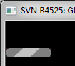
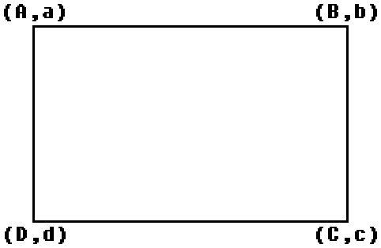

Dans la "série" des tutoriels concernant le développement sur consoles Nintendo, vous voici arrivé(e) sur celui qui vous montrera comment programmer sur Wii !
Une carte SD, même si une µSD avec adapteur comme ceci est l'idéal(pratique pour le lecteur USB souvent fourni avec) : La petite rentre dans la grande, ce qui permet plus d'utilisations de la µSD. La grande n'est qu'un adaptateur de la petite.
Nous utiliserons DevkitPro, le même environnement de travail que pour la PAlib par exemple. Ce qui signifie que les manipulations seront basées sur la ligne de commande, ce qui n'est pas portable. Dans ce tutoriel, nous ne verrons que ce qui concerne Windows.
DevkitPro n'étant "que" l'environnement de travail, il ne nous permet pas réellement de développer des applications : il faut la bibliothèque. Nous utiliserons la libogc, utilisée dans le développement d'applications GameCube/Wii.
Vous pouvez télécharger l'installateur de DevkitPro à cette adresse. Celui-ci vous permettra une installation "à la carte". Ouvrez l'installateur, choisissez "Download and Install", puis appuyez sur "Next". Choisissez "Remove downloaded files" puis appuyez sur "Next". A présent, vous avez un panel avec des checkboxes. Laissez coché "Minimal System", décochez "devkitARM" (celui est utilisé pour le développement d'application sur la Nintendo DS par exemple), laissez coché "devkitPPC" (il sert à la compilation d'applications pour GameCube/Wii), décochez "devkitPSP". Il y a un éditeur de textes : "Programmer's Notepad". Personnellement, j'ai Notepad++ donc j'ai décoché "Programmer's Notepad". A présent, appuyez sur "Next" et laissez "c:\devkitpro" comme dossier de destination. Laissez faire l'installation...
Maintenant, rendez-vous dans "C:\devkitpro\examples\wii emplate" et ouvrez votre console (Démarrer->Exécuter->"cmd" ou Windows+R->"cmd") et exécutez ce code :
cd \devkitpro\examples\wii\template
make
Si tout s'est bien passé, vous devriez avoir un fichier "template.dol". Sinon, vous devrez recommencer l'installation...
Sur la Wii
Pour lancer votre application sur la Wii, il faut installer une chaîne : la chaîne Homebrew. De précédentes méthodes consistaient à profiter d'une faille dans un jeu : The Legend of Zelda : Twilight Princess. La méthode fut donc appelée "Twilight hack". N'ayant pas forcément le jeu, la chaîne homebrew est une bonne alternative !
L'installation de la chaîne homebrew est très bien expliquée à cette adresse. Pour que vos homebrews soient reconnus, il faut les placer dans un dossier "apps" situé à la racine de votre µSD. A l'intérieur de celui-ci, créez un répertoire du nom du homebrew, puis placez-y votre fichier .dol que vous aurez renommé en "boot.dol". Vous pouvez ajouter une icône en créant un fichier "icon.png" de taille 128*48. Vous pouvez ajouter une description en créant un fichier meta.xml. Suivez ces instructions pour le remplir correctement :
<?xml version="1.0" encoding="UTF-8" standalone="yes"?>
<app version="1">
<name>Nom du homebrew</name>
<coder>Créateur du homebrew</coder>
<version>Version du homebrew</version>
<short_description>Petite desscription</short_description>
<long_description>Longue description</long_description>
</app>
Nous allons voir comment bien ordonner nos projets. Pour cela, rendez-vous dans C:\devkitpro et créez un dossier "projets". A l'intérieur de celui-ci, créez un dossier portant le nom de votre projet, et copiez-y le makefile de C:\devkitpro\examples\wii emplate. Ensuite, créez un répertoire "source", dans lequel vous mettrez... votre source :) . Enfin, créez un fichier build.bat dans lequel vous écrivez :
@echo off
make clean
make
if exist boot.dol (del boot.dol)
ren projet.dol boot.dol
pause
Dans ce fichier, il faudra remplacer "projet" par le nom de votre projet. Et voilà :) !
Si vous ne voulez pas passer votre temps à aller sur la Wii pour tester vos homebrews, vous pouvez opter pour un émulateur. Il s'agit d'un programme qui imite le comportement d'une plateforme (ici la Wii) pour certains types de formats (ici iso, dol ou elf). En l'occurence nous utiliserons le format elf. Il sera obtenu directement après compilation, donc ne vous inquiétez pas il n'y aura pas trop de manipulations supplémentaires. Premièrement, téléchargez Dolphin à cette adresse (j'ai pris la R4525 car je n'ai pas su faire fonctionner la R4771). Regardez bien la partie "O/S". Si vous êtes en 32 bits prenez Win32. Si vous êtes en 64 bits prenez Windows x64.
Ouvrez le programme, choisissez le dossier d'installation et appuyez sur Extract (le seul bouton :-° ). Dans le dossier créé par l'installation, vous avez un fichier nommé "Dolphin.exe". Bien qu'il soit exécutable normalement, nous pouvons l'utiliser en ligne de commande.
Relier la Wiimote à l'ordinateur
C'est la partie la plus difficile et la plus fastidieuse de l'émulation. Tout d'abord, sachez que les Wiimotes se connectent via la technologie Bluetooth. Si votre ordinateur n'est pas équipé d'un composant Bluetooth, il faudra en acheter un. Je vous laisse en chercher sur la toile. Pour ma part, il s'agit d'un petit dongle de la marque Belkin. Après, il faut le gestionnaire de périphériques Bluetooth. Il se peut que votre système en soit équipé. Si c'est le cas utilisez-le, mais s'il ne fonctionne pas bien ou si vous n'en avez pas, il faudra en prendre un payant (ils sont tous payants :-° ). Quitte à payer, autant prendre BlueSoleil. Vous avez 30 jours d'essai et vous êtes limité à 2 Mo de transfert (pour les téléphones par exemple) ; si vous voulez bénéficier pleinement du logiciel il faudra payer 19.99€ ... Maintenant faites "ajouter un périphérique" (présent sur tous les logiciels de périphériques Bluetooth) et appuyez simultanément sur les touches 1 et 2 de la Wiimote (ou alors sur le bouton SYNC. en bas de la batterie). Les 4 DEL devraient clignoter ensemble. Si elles ne s'arrêtent pas au bout de 30/40 secondes, c'est que la connexion est établie. Dans le cas contraire il faudra recommencer cette action, voire réinstaller votre composant Bluetooth.
L'émulateur
Maintenant que vous savez relier vos Wiimotes à votre ordinateur, nous pouvons nous familiariser avec l'émulateur ^^ .
Configuration
Ouvrez Dolphin.exe. Appuyez sur "Config" (clef à molette) et choisissez l'onglet "Wii". A "Sensor Bar Position" mettez si elle se trouve en haut ou en bas de votre écran. A "Aspect Ratio" mettez 4:3 et à "System Language" mettez "French".
Fermez la fenêtre. Appuyez sur "Wiimote" (tout à droite de la toolbar). Dans la zone "Input Source" mettez "Real Wiimote". Vous pouvez laisser les autres paramètres par défaut.
Pour tester vos futurs homebrews, il faudra régler le FPS (le nombre d'images par seconde). Pour cela, rendez-vous dans Options->Configure... et modifiez la valeur à "Framelimit" : ce nombre représente le FPS maximal.
Utilisation normale
L'émulateur Dolphin peut lire les formats .elf, .dol, .gcm, .iso et .wad. Les deux premiers formats peuvent être obtenus après compilation, le format .iso est celui des images contenu sur vos disques et le format .wad est celui des chaînes de la Wii. Pour chargez un fichier, appuyez sur "Open" (tout à gauche de la toolbar) et naviguez dans vos fichiers. Et vous pouvez exécuter votre homebrew !
Utilisation en ligne de commande
Pour nous simplifier la vie, nous allons créer des fichiers de commandes (en Batch).
Créons à présent un fichier exec.bat :
Dolphin.exe /e %1
Le commutateur /e sert à dire qu'on va donner un .elf. Et %1 représente le deuxième argument passé au fichier .bat (le premier étant son nom). Donc pour l'utiliser il faudra placer exec.bat dans le dossier de Dolphin et faire glisser le fichier .elf que l'on veut utiliser sur exec.bat. Il y a même un commutateur de débug : le commutateur /d . Donc nous créerons un fichier exec_debug.bat :
Dolphin.exe /d /e %1
Ce fichier fonctionnera de la même manière que exec.bat, cependant il faudra appuyer sur le bouton "Play" de Dolphin pour commencer à émuler.
Si vous voulez mettre la fenêtre en mode plein écran, appuyez sur Alt+Entrée.
Maintenant que nous avons vu comment procéder sous Windows, nous allons voir la marche à suivre pour Linux.
Téléchargez l'environnement
Pour installer devkitPro, tout se trouve à cette adresse. Commencez par créer un dossier devkitPro dans un répertoire où vous avez des droits, pour moi /home/snake48/devkitPro . Ensuite allez sur le site dans la partie "devkitPPC" (pour ceux qui ont la flemme de chercher : ici). Là vous avez deux archives Linux : "devkitPPC_r21-x86_64-linux.tar.bz2" et "devkitPPC_r21-i686-linux.tar.bz2". Personnellement j'ai pris la deuxième. Maintenant décompressez l'archive directement dans le dossier devkitPro. Donc théoriquement dedans vous devriez voir un dossier devkitPPC. Occupons-nous de la libogc : rendez-vous ici et prenez "libogc-1.8.3.tar.bz2". Décompressez l'archive dans le dossier devkitPro. Maintenant pour tester si l'installation a bien fonctionner, nous allons télécharger les exemples ici. Là aussi c'est pareil : à décompresser dans le dossier devkitPro. Assurez-vous bien que le dossier devkitPro contient bien les trois dossiers suivants : devkitPPC, examples et libogc. Maintenant il faut tester que tout se passe bien. Rendez-vous dans devkitPro/examples/wii/template et créez-y un fichier nommé build.sh dans lequel vous mettrez (j'utilise gedit comme éditeur) :
# !/bin.bash
export DEVKITPRO="chemin_vers_devitPro"
export DEVKITPPC=${DEVKITPRO}"/devkitPPC"
make clean
make
if test -e "boot.dol"
then rm -f "boot.dol"
fi
mv "template.dol" "boot.dol"
echo "Appuyez sur entrée pour continuer..."
read touche
Remplacez "chemin_vers_devkitPro" par l'emlacement du dossier devkitPro. Maintenant définissez ce fichier comme étant exécutable (chmod +x ou à la main en utilisant les propriétés). Maintenant lancez build.sh et si tout se passe bien vous devriez voir un fichier boot.dol apparaitre. Si ce n'est pas le cas, recommencez l'installation.
L'émulateur
Vous pouvez soit télécharger les binaires linux à cette adresse, soit utiliser Wine pour exécuter les fichiers EXE (déconseillé), soit encore recompiler les sources de Dolphin en collant le code suivant dans votre terminal :
Selon la puissance de votre ordinateur, l'opération devrait prendre quelques dizaines de minutes.
Et voilà vous êtes paré(e) pour programmer des applications Wii sous Linux :) . Notez que s'ils vous manque des libs, ici vous trouverez la libfat et les portlibs...
Dans ce chapitre, nous verrons comment afficher "Hello World" sur l'écran... Dit comme cela, ça a l'air plutôt facile, mais vous verrez que ce n'est pas le cas :D .
On va commencer par une analyse linéaire d'un code affichant "Hello World" à l'écran. Donc le voici :
/*Ci-dessous les libs standards*/
#include <stdio.h>
#include <stdlib.h>
#include <gccore.h> //Header principal de la libogc
#include <wiiuse/wpad.h> //Permet d'utiliser la wiimote :)
static void *xfb = NULL;
static GXRModeObj *rmode = NULL; //Variable représentant le mode d'affichage optimal de la télé
int main(int argc, char **argv)
{
VIDEO_Init(); //Initialise les fonctionnalités graphiques
WPAD_Init(); //Initialise le système de wiimote
rmode = VIDEO_GetPreferredMode(NULL); //On détecte le mode optimal pour la télé
xfb = MEM_K0_TO_K1(SYS_AllocateFramebuffer(rmode)); //Permet d'afficher quelque chose
/*On initialise la console de texte. Dans l'ordre : mode d'affichage,
point X du sommet en haut à gauche de la console, point Y du sommet
en haut à gauche de la console, point X du sommet en bas à droite
de la console, point Y du sommet en bas à droite de la console,
nombre d'octets à allouer.*/
console_init(xfb,20,20,rmode->fbWidth,rmode->xfbHeight,rmode->fbWidth*VI_DISPLAY_PIX_SZ);
VIDEO_Configure(rmode); //Configure l'affichage sur le mode déterminé auparavant
VIDEO_SetNextFramebuffer(xfb); //Indique que l'image à afficher sera à placer dans la zone pointée par xfb
VIDEO_SetBlack(FALSE);
VIDEO_Flush(); //Raffraichissement de l'écran
VIDEO_WaitVSync(); //Attente de la fin de l'affichage de l'image
/*Il y a plusieurs modes d'affichage. On peut tout afficher en
un seul bloc, ou alors de façon entrelacée, c'est à dire
qu'il faut 2 images pour en constituer une. La ligne ci-dessous
sert à dire ce qu'il faut faire si le mode est entrelacé*/
if(rmode->viTVMode&VI_NON_INTERLACE)
VIDEO_WaitVSync();
printf("\x1b[2;0H"); //Permet de positionner le texte qui va suivre : le 2 correspond à la ligne et le 0 à la colonne
printf("Hello World!"); //Enfin, nous pouvons écrire notre Hello World :) !
while(1) //Boucle principale
{
WPAD_ScanPads(); //On récupère les événements des wiimotes, on y reviendra plus tard
u32 pressed = WPAD_ButtonsDown(0); //On récupère les touches pressées de la première wiimote
if(pressed & WPAD_BUTTON_HOME) //Si on appuie sur le bouton "Maison" de la première wiimote
break; //On passe au return 0 qui permet de revenir au loader (dans notre cas la Chaine Homebrew)
VIDEO_WaitVSync();
}
return 0;
}
Vous pouvez créer une fonction qui regroupe ces initialisations, pour ne garder que la partie où l'on écrit (à la limite, vous pourrez le mettre dans un fichier .h et un fichier.cpp que vous pourrez inclure dans vos futurs projets ^^ ) :
Vous savez qu'une wiimote est composée de plusieurs boutons :
Haut
Bas
Gauche
Droite
A
B
+
-
Home
1
2
Pour les événements boutons, il existe 3 états :
Pressé (nouvel appui sur le bouton) : u32 WPAD_ButtonsDown(int chan);
Maintenu : u32 WPAD_ButtonsHeld(int chan);
Relâché : u32 WPAD_ButtonsUp(int chan);
Qu'est-ce que chan ?
Il s'agit de l'identifiant de la manette. Il y en a 4 :
WPAD_CHAN_0 : première wiimote
WPAD_CHAN_1 : deuxième wiimote
WPAD_CHAN_2 : troisième wiimote
WPAD_CHAN_3 : quatrième wiimote
Ensuite, la valeur retournée par ces fonctions est une composée de flags :
WPAD_BUTTON_UP : haut
WPAD_BUTTON_DOWN : bas
WPAD_BUTTON_LEFT : gauche
WPAD_BUTTON_RIGHT : droite
WPAD_BUTTON_A : A
WPAD_BUTTON_B : B
WPAD_BUTTON_PLUS : +
WPAD_BUTTON_MINUS : -
WPAD_BUTTON_HOME : Home
WPAD_BUTTON_1 : 1
WPAD_BUTTON_2 : 2
Voici un exemple :
u32 held=WPAD_ButtonsHeld(WPAD_CHAN_0); //On récupère les touches maintenues de la première wiimote
if(held&WPAD_BUTTON_A) //Si le bouton A de la première wiimote est maintenu
{
}
Vous voulez savoir comment utiliser le nunchuk ? C'est assez simple, il faut juste connaître le principe des "expansions". Il s'agit de tout ce qui se rajoute à la wiimote. La structure utilisée pour les expansions est la structure expansion_t. Il faudra déclarer la variable comme ceci :
struct expansion_t exp;
Pour savoir quelles sont les expansions pour une wiimote, on utilisera la fonction void WPAD_Expansion(int chan, struct expansion_t *exp); où exp est un pointeur sur l'expansion :
struct expansion_t exp;
WPAD_Expansion(WPAD_CHAN_0,&exp); //On récupère les expansions de la première wiimote
Les expansions sont contenues dans le membre type de la structure expansion_t. Cette variable fonctionne en flags (tutoriel de PY). Voici les différents flags :
WPAD_EXP_NONE : aucun (mais on ne s'en occupera pas)
WPAD_EXP_NUNCHUK : Nunchuk
WPAD_EXP_CLASSIC : manette classique
WPAD_EXP_GUITARHERO3 : manette Guitar Hero 3
WPAD_EXP_WIIBOARD : Wii balance Board
WPAD_EXP_UNKNOWN : expansion inconnue
Voici une portion de code qui permet d'attendre le nunchuk pour la première wiimote :
struct expansion_t exp;
WPAD_Expansion(WPAD_CHAN_0,&exp);
while(!(exp.type&WPAD_EXP_NUNCHUK))
{
printf("\x1b[1;2H");
printf("Branchez le nunchuk sur la premiere wiimote.");
WPAD_ScanPads();
WPAD_Expansion(WPAD_CHAN_0,&exp);
}
Les boutons
Maintenant, nous pouvons nous attaquer aux boutons. Il y en a deux : C et Z. Pour récupérer les touches appuyées, maintenues ou relâchées, on utilise les mêmes fonctions que pour la Wiimote. Comme il y a deux boutons sur le Nunchuk, nous avons deux flags :
WPAD_NUNCHUK_BUTTON_C : C
WPAD_NUNCHUK_BUTTON_Z : Z
Le joystick
Vous savez qu'un Nunchuk contient un joystick. Nous allons donc voir comment récupérer l'événement joystick. La structure expansion_t est constituée d'une variable de type nunchuk_t appelée nunchuk. Celle-ci contient une variable de type joystick_t appelée js. Donc si vous voulez accéder au joystick du Nunchuk, on appellera exp.nunchuk.js . Cette structure joystick_t est constituée de :
struct vec2b_t max : valeurs maximales pour x et y
struct vec2b_t min : valeurs minimales pour x et y
struct vec2b_t center : valeurs du joystick au centre
struct vec2b_t pos : positions x et y du joystick
float ang : angle du joystick
float mag : magnitude du joystick (nous ne nous en occuperons pas)
Pour les valeurs du joystick, nous utilisons le type ubyte, donc nous aurons des valeurs comprises entre 0 et 255. Le joystick au repos est sensé avoir pour valeurs (127 ; 127). Mais ces données peuvent être légèrement erronées car le joystick au repos n'est pas forcément parfaitement au centre. Par conséquent, nous nous réferrerons à la variable center. Pour calculer le décalage dans les x du joystick, il faudra donc faire :
int x=exp.nunchuk.js.pos.x-exp.nunchuk.js.center.x;
Votre résultat sera négatif si vous êtes à gauche et positif si vous êtes à droite. Pour calculer le décalage dans les y du joystick, il faudra faire :
int y=-exp.nunchuk.js.pos.y+exp.nunchuk.js.center.y;
Cette manette présente plusieurs boutons et deux joysticks. Le flag expansion de la manette classique est WPAD_EXP_CLASSIC.
Les boutons
Les boutons fonctionnent de la même façon que pour la Wiimote ou encore le Nunchuk. Voici les flags de la manette classique :
WPAD_CLASSIC_BUTTON_UP : haut
WPAD_CLASSIC_BUTTON_DOWN : bas
WPAD_CLASSIC_BUTTON_LEFT : gauche
WPAD_CLASSIC_BUTTON_RIGHT : droite
WPAD_CLASSIC_BUTTON_A : A
WPAD_CLASSIC_BUTTON_B : B
WPAD_CLASSIC_BUTTON_X : X
WPAD_CLASSIC_BUTTON_Y : Y
WPAD_CLASSIC_BUTTON_FULL_L : L
WPAD_CLASSIC_BUTTON_FULL_R : R
WPAD_CLASSIC_BUTTON_ZL : ZL
WPAD_CLASSIC_BUTTON_ZR : ZR
WPAD_CLASSIC_BUTTON_PLUS : +
WPAD_CLASSIC_BUTTON_MINUS : -
WPAD_CLASSIC_BUTTON_HOME : Home
Exemple de code :
struct expansion_t exp;
WPAD_Expansion(WPAD_CHAN_0,&exp);
while(!(exp.type&WPAD_EXP_CLASSIC))
{
printf("\x1b[1;2H");
printf("Branchez la manette classique.");
WPAD_ScanPads();
WPAD_Expansion(WPAD_CHAN_0,&exp);
}
while(1)
{
WPAD_ScanPads();
u32 pressed=WPAD_ButtonsDown(WPAD_CHAN_0);
if((pressed&WPAD_BUTTON_HOME) || (pressed&WPAD_CLASSIC_BUTTON_HOME)) //Si on appuie sur Home de la Wiimote ou de la manette classique ;)
break;
VIDEO_WaitVSync();
}
Les joysticks
Les joysticks de la manette classique fonctionnent de la même façon que le joystick du Nunchuk. La variable de expansion_t contenant la manette classique s'appelle classic. Puisqu'il y a deux joysticks, les variables contenant les joysticks seront ljs (joystick gauche) et rjs (joystick droit). Donc vous aurez ceci pour les deux joysticks :
int xgauche=ext.classic.ljs.pos.x-ext.classic.ljs.center.x;
int ygauche=-ext.classic.ljs.pos.y+ext.classic.ljs.center.y;
int xdroite=ext.classic.rjs.pos.x-ext.classic.rjs.center.x;
int ydroite=-ext.classic.rjs.pos.y+ext.classic.rjs.center.y;
Le flag de la manette de Guitar Hero 3 est WPAD_EXP_GUITARHERO3.
Voici les flages des boutons de la manette de Guitar Hero 3 :
GUITAR_HERO_3_BUTTON_GREEN : vert
GUITAR_HERO_3_BUTTON_RED : rouge
GUITAR_HERO_3_BUTTON_YELLOW : jaune
GUITAR_HERO_3_BUTTON_BLUE : bleu
GUITAR_HERO_3_BUTTON_ORANGE : orange
GUITAR_HERO_3_BUTTON_STRUM_UP : corde vers le haut
GUITAR_HERO_3_BUTTON_STRUM_DOWN : corde vers le bas
GUITAR_HERO_3_BUTTON_PLUS : +
GUITAR_HERO_3_BUTTON_MINUS : -
GUITAR_HERO_3_BUTTON_ALL
Le membre de l'union correspondant à la guitare dans expansion_t est gh3, de type guitar_hero_3_t :
typedef struct guitar_hero_3_t {
short btns; //Boutons juste pressés
short btns_last; //Boutons juste pressés (à préférer au premier)
short btns_held; //Boutons maintenus
short btns_released; //Boutons relâchés
ubyte wb_raw;
float whammy_bar; //Vibrato, valeur comprise entre 0 et 1 ; mais peut dépasser. Dans le doute testez que si whammy_bar>1. alors comptez 1.
ubyte tb_raw;
int touch_bar; //Barre de "slide". 4096-> On n'y touche pas ; valeurs de gauche à droite 4097->4112 à peu près répartis équitablement
struct joystick_t js; //Joystick
} guitar_hero_3_t;
Exemple de code :
struct expansion_t exp;
WPAD_Expansion(WPAD_CHAN_0,&exp);
while(!(exp.type&WPAD_EXP_GUITARHERO3))
{
printf("\x1b[1;2H");
printf("Branchez la manette Guitar Hero 3.");
WPAD_ScanPads();
WPAD_Expansion(WPAD_CHAN_0,&exp);
}
while(1)
{
WPAD_ScanPads();
WPAD_Expansion(WPAD_CHAN_0,&exp);
u32 pressed=WPAD_ButtonsDown(WPAD_CHAN_0);
if((pressed&WPAD_BUTTON_HOME) || (exp.gh3.btns_last&GUITAR_HERO_3_BUTTON_GREEN)) //Si on appuie sur Home de la Wiimote ou sur le bouton vert
break;
VIDEO_WaitVSync();
}
Nous allons voir comment utiliser les données de votre Wii Balance Board :waw: ! Nous utiliserons aussi les expansions, mais le fonctionnement est différent que pour les exemples précédents. La variable contenant l'expansion ne servira que pour la Balance Board. Ce n'est pas une expansion propre aux Wiimotes comme vu précédemment.
La structure expansion_t contient une variable de type wii_board_t appelée "wb". Celle-ci contient plusieurs membres dont :
float tl : masse (kg) exerçant une pression sur le côté en haut à gauche ("t" -> "top" ; "l" -> "left")
float tr : masse exerçant une pression sur le côté en haut à droite ("r" -> "right")
float bl : masse exerçant une pression sur le côté en bas à gauche ("b" -> "bottom")
float br : masse exerçant une pression sur le côté en bas à droite
float x : différence de masse exerçant une pression entre la droite et la gauche. Si x<0 alors il y a plus de pression sur la partie gauche que sur la partie droite. Inversement, si x>0 alors il y a plus de pression sur la partie droite que sur la partie gauche.
float y : différence de masse exerçant une pression entre le haut et le bas. Si y<0 alors il y a plus de pression sur la partie haute que sur la partie basse. Réciproquement, si y>0 alors il y a plus de pression sur la partie basse que sur la partie haute.
Si vous voulez transformer votre Wii Balance Board en balance tout court, il suffit d'exécuter ce code :
struct expansion_t exp;
exp.type=WPAD_EXP_WIIBOARD;
while(1)
{
WPAD_ScanPads();
WPAD_Expansion(WPAD_BALANCE_BOARD,&exp);
printf("Vous pesez %f kg.", exp.wb.tl + exp.wb.tr + exp.wb.bl + exp.wb.br);
u32 pressed=WPAD_ButtonsDown(WPAD_CHAN_0);
if(pressed & WPAD_BUTTON_HOME) //Si on appuie sur le bouton "Maison" de la première wiimote
break;
VIDEO_WaitVSync();
}
Nous allons voir ici comment interpréter les données qui nous sont délivrées par la caméra infrarouge des Wiimotes. Elle permet repérer la position de votre Wiimote grâce à la SensorBar qui dispose d'un jeu de huit diodes infrarouges (quatre à droite et quatre à gauche). Nous allons voir aussi son orientation sur ses axes, les mouvements que vous exercez dessus, grâce aux capteurs placés dans la Wiimote. Cerise sur le gâteau, on peut faire de même pour le Nunchuk :soleil: !
Cette ligne n'active l'infrarouge que pour la première wiimote.
Enfin, dans votre boucle, il faudra créer une variable de type ir_t et utiliser cette fonction pour récupérer les données du capteur dans votre variable :
struct ir_t ir;
WPAD_IR(WPAD_CHAN_0,&ir);
Il ne reste plus qu'à interpréter ces données. La structure ir_t contient ces membres, entre autres :
float x : position x
float y : position y
float z : distance en mètres entre la SensorBar et votre Wiimote
float angle : angle de la wiimote par rapport à la SensorBar
Voici un exemple :
struct ir_t ir;
WPAD_SetVRes(WPAD_CHAN_ALL,640,480);
WPAD_SetDataFormat(WPAD_CHAN_0,WPAD_FMT_BTNS_ACC_IR);
while(1)
{
WPAD_ScanPads();
WPAD_IR(WPAD_CHAN_0,&ir);
u32 pressed=WPAD_ButtonsDown(WPAD_CHAN_0);
printf("\x1b[1;2H");
printf("x : %f y: %f",ir.x,ir.y);
printf("\x1b[2;2H");
printf("Vous etes a %f m de votre SensorBar.",ir.z);
if(pressed&WPAD_BUTTON_HOME)
reload();
VIDEO_WaitVSync();
}
Récupérer l'orientation et les forces de la Wiimote
L'orientation
La Wiimote
Pour récupérer l'orientation de la Wiimote, on créera une variable de type orient_t. Nous ne nous occuperons que de ses variables principales :
float roll : rotation sur l'axe [Capteur infrarouge/Port extension]
float pitch : rotation sur l'axe [Gauche/Droite]
float yaw : mouvement en lacet (mais nous n'utiliserons pas cette variable)
Voici le schéma des deux types de rotation :
En rouge : roll. En bleu : pitch.
Ce schéma ne fonctionne que si votre Wiimote est horizontale (plus ou moins parallèle au sol). Les deux variables varient entre -180 et 180 (ce sont des flottants). Si vous tournez la Wiimote vers la gauche, roll sera négatif et si vous la tournez vers la droite roll sera positif. Si vous tournez la Wiimote vers le haut (selon l'axe bleu), pitch sera négatif et si vous tournez la Wiimote vers le bas pitch sera positif.
Le prototype de la fonction est void WPAD_Orientation(int chan, struct orient_t *orient); , où chan est la Wiimote et orient le pointeur vers la variable qui contiendra l'orientation de la Wiimote.
Voici donc un code récapitualitf, où vous pourrez faire tous vos mouvements pour mieux visualiser ces variables (j'ai rajouté yaw pour ceux qui voulaient voir) :
Le Wii Wheel, c'est cet accessoire en plastique qui ressemble à un volant, que l'on peut acheter à l'unité, ou en même temps que Mario Kart. Pour repérer son orientation, nous utiliserons en fait la variable pitch. Avec le code que j'ai mis plus haut, mettez vous en mode Wheel (capteur infrarouge à gauche et les boutons vers vous : roll=-90). Si vous tournez vers la gauche (Wiimote verticale) pitch vaudra -90. Si vous ne tournez pas, pitch vaudra 0. Si vous tournez à droite, pitch vaudra 90.
Les forces
Nous allons apprendre comment récupérer les forces de gravité appliquées sur la Wiimote. Ceci nous permettra notamment de détecter comment on secoue la Wiimote. Il existe une structure : gforce_t qui contient trois flottants : x, y et z. Le prototype de la fonction est void WPAD_GForce(int chan, struct gforce_t *gforce); , où chan est la Wiimote et gforce est le pointeur vers la variable qui contiendra les forces de gravité appliquées sur la Wiimote. Les axes sont :
Supposons que nous voulions détecter si on secoue la Wiimote de haut en bas ou de bas en haut. On va dire que 3 est la valeur à partir de laquelle on dit qu'on a secoué la Wiimote. Nous écrirons alors :
if(force.z>3)
{}/*Alors la Wiimote est secouee*/
Or, si on déplace la Wiimote vers le bas, la valeur sera négative. Bien que valant -3 le programme ne saura pas que la Wiimote est secouée. Donc il faut prendre sa valeur absolue :
if(abs(force.z)>3)
{}/*Alors la Wiimote est secouee*/
Petit bonus : Vu que nous étudions les fonctions propres à la Wiimote, sachez que vous pouvez obtenir le niveau de batterie avec la valeur de retour de u8 WPAD_BatteryLevel(int chan); Ceci vous permettra entre autres d'afficher un message d'avertissement lorsque la batterie est en-dessous d'une certaine valeur.
Vous vous souvenez de la manière de récupérer l'expansion de la Wiimote ? Eh bien nous allons l'utiliser ici. En effet, le membre nunchuk de la structure expansion_t contient une variable orient de type orient_t et une variable gforce de type gforce_t. Donc voici un petit exemple pour bien comprendre :
#include <stdio.h>
#include <stdlib.h>
#include <gccore.h>
#include <wiiuse/wpad.h>
#define textPos(x,y) printf("\x1b[%d;%dH",y,x)
static void *xfb = NULL;
static GXRModeObj *rmode = NULL;
void (*reload)() = (void(*)())0x80001800;
void initText();
int main(int argc, char **argv)
{
VIDEO_Init();
WPAD_Init();
initText();
struct expansion_t exp;
WPAD_Expansion(WPAD_CHAN_0,&exp);
while(!(exp.type&WPAD_EXP_NUNCHUK))
{
printf("\x1b[1;2H");
printf("Branchez le nunchuk sur la premiere wiimote.");
WPAD_ScanPads();
WPAD_Expansion(WPAD_CHAN_0,&exp);
}
while(1)
{
WPAD_ScanPads();
WPAD_Expansion(WPAD_CHAN_0,&exp);
textPos(2,2);
printf("Roll : %.3f",exp.nunchuk.orient.roll); //Roll du nunchuk
textPos(2,4);
printf("Picth : %.3f",exp.nunchuk.orient.pitch); //Pitch du nunchuk
textPos(20,2);
printf("Gx : %.3f",exp.nunchuk.gforce.x); //Force de gravité X du nunchuk
textPos(20,4);
printf("Gy : %.3f",exp.nunchuk.gforce.y); //Force de gravité Y du nunchuk
textPos(20,6);
printf("Gz : %.3f",exp.nunchuk.gforce.z); //Force de gravité Z du nunchuk
u32 pressed = WPAD_ButtonsDown(0);
if(pressed & WPAD_BUTTON_HOME)
reload();
VIDEO_WaitVSync();
}
return 0;
}
void initText()
{
rmode = VIDEO_GetPreferredMode(NULL);
xfb = MEM_K0_TO_K1(SYS_AllocateFramebuffer(rmode));
console_init(xfb,20,20,rmode->fbWidth,rmode->xfbHeight,rmode->fbWidth*VI_DISPLAY_PIX_SZ);
VIDEO_Configure(rmode);
VIDEO_SetNextFramebuffer(xfb);
VIDEO_SetBlack(FALSE);
VIDEO_Flush();
VIDEO_WaitVSync();
if(rmode->viTVMode&VI_NON_INTERLACE)
VIDEO_WaitVSync();
}
Et voilà, vous pouvez maintenant gérer l'accéléromètre du nunchuk :) ...
Nous avons vu jusqu'à présent comment utiliser la console, nous allons voir comment faire "apparaître" des images à l'écran :soleil: ! Pour cela une bibliothèque simple d'utilisation : libwiisprite !
La libwiisprite existe sous la forme de headers + fichier .a, mais il y a des problèmes à la compilation à cause du .a qui utilise des fonctions n'existant plus. Je vous ai donc compilé un nouveau libwiisprite.a. Ensuite on va télécharger les headers ici. Décompressez l'archive, et mettez les fichiers .h du dossier libwiisprite\include\ dans C:\devkitPro\libogc\include\wiisprite\ (vous devrez créer le dossier wiisprite avant) et le fichier libwiisprite.a dans C:\devkitPro\libogc\lib\wii\. Cependant pour que cette lib puisse fonctionner, il vous faut la libpng et la zlib. Dans l'archive, il y a un dossier libpng alors copiez le contenu de son sous-répertoire include dans C:\devkitPro\libogc\include\ et le contenu du sous-répertoire lib dans C:\devkitPro\libogc\lib\wii\. Maintenant, il ne nous reste plus que la zlib. Dans les dossiers en ligne de devkitPro, il y a un répertoire consacré aux ports de libs : portlibs. A présent cherchez zlib-X.X.X-ppc.tar.bz2 (à l'heure où j'écris c'est zlib-1.2.4-ppc.tar.bz2).
Dans chaque projet utilisant la libwiisprite, il faudra modifier le makefile comme suit ligne 36 :
La libwiisprite peut être considérée comme une bibliothèque de haut niveau. En effet, nous n'aurons plus besoin de faire toutes ces initialisations comme pour la console.
Charger une image
Commençons par prendre une image. Pour l'exemple, j'ai pris un sprite qui sera utilisé dans le TP ^^ .
Voici l'image :
Appelez-la barre.png.
Maintenant, il faut le transformer en données C ou C++. Pour cela, allez dans C:\devkitpro\devkitPPC\bin et copiez le fichier raw2c.exe dans le dossier source de votre projet. Placez-y aussi barre.png et faites glisser l'image sur raw2c.exe. Un fichier barre.c et un fichier barre.h devraient apparaître.
./raw2c.exe monimage.ext
Il faudra donc inclure barre.h dans votre main, sachant que votre barre.c sera automatiquement intégré au projet.
Tout d'abord notez l'inclusion de la libwiisprite :
#include <wiisprite/wiisprite.h>
Toutes les classes de cette lib sont dans un espace de nom appelé wsp. C'est pour ça que j'ai écrit :
using namespace wsp;
On crée une variable contenant l'écran :
GameWindow gwd;
Ensuite on crée les sprites. Pour cela, on va créer d'abord les images qui vont charger les données des fichiers générés par raw2c, et les mettre dans notre sprite. Donc déjà il faut déclarer les deux variables :
Image im; //Contiendra l'image
Sprite sprite; //Contiendra le sprite
A présent, il faut créer le manager, c'est un système permettant de gérer l'affichage. Uniquement les éléments envoyés au manager seront affichés. Il faudra passer au constructeur le nombre maximum d'éléments à afficher. Donc déclarons notre manager :
LayerManager manager(1); //Une seule image à afficher
Ensuite on va créer un booléen valant VRAI tant qu'on n'appuie pas sur le bouton Home. Et dès qu'on appuie sur le bouton, on sort de la boucle et le return 0; permet de retourner à la Chaîne Homebrew (cette partie peut ressembler avec la SDL) :
bool continuer=true;
Maintenant que les variables sont déclarées, on va les initialiser. Tout d'abord, on initialise l'écran :
gwd.InitVideo();
Ensuite on charge les données de la barre dans notre image :
im.LoadImage(barre);
On charge l'image dans notre sprite :
sprite.SetImage(&im);
On définit la position du sprite :
sprite.SetPosition(0,0);
Il faut dire au manager qu'on veut lui ajouter le sprite :
manager.Append(&sprite);
Dans notre boucle, on va dessiner le contenu du manager :
manager.Draw(0,0);
Enfin, on raffraîchit l'écran :
gwd.Flush();
Et voici ce qu'on obtient :
Mais vous pouvez voir que les bords magenta sont visibles. Nous allons donc les enlever en modifiant directement l'image pour faire un fond transparent.
Se passer de manager
Si vous voulez avoir un nombre variable d'éléments, que vous ne voulez pas vous embêter avec les profondeurs, ou encore que vous êtes habitué(e) au système de blit (comme dans la SDL), vous pouvez vous affranchir de manager de cette manière (d'après les sources de la bibliothèque) :
Ainsi, celui qui est affiché après les autres sera au-dessus des autres, à la manière de SDL_BlitSurface pour ceux qui connaissent ;) .
La transparence
Pour faire un fond transparent, j'ai créé un petit programme en Python, mais vous pouvez essayer de le faire sur un logiciel de graphisme tel que Photoshop ou Gimp (j'avais des problèmes de rendu avec Gimp). Pour utiliser le programme, il faut avoir installé :
Si vous n'avez pas Python mais que vous envisagez de programmer en Python par la suite, vous pouvez télécharger Python 2.6 et PIL 1.1.6. Si vous avez déjà Python, rien ne vous empêche de télécharger PIL 1.1.6. En revanche, si vous n'avez pas Python et que ce langage ne vous intéresse pas trop, vous pouvez essayer de faire la transparence avec un logiciel.
Donc voici le programme :
from PIL import Image
import sys
if len(sys.argv)>1:
image=Image.open(sys.argv[1])
image1=Image.new("RGBA",image.size)
pix=image.load()
pix1=image1.load()
for x in range(0,image.size[0]):
for y in range(0,image.size[1]):
if pix[x,y]==(255,0,255,255):
pix1[x,y]=(255,0,255,0)
else:
pix1[x,y]=pix[x,y]
image1.save(sys.argv[1])
else:
print "usage : transp.py filename"
Enregistrez-le dans transp.py (ou autre, du moment que l'extension est .py). Pour l'utiliser, il suffit de faire glisser l'image sur le transp.py (dans le cas où python.exe est le programme par défaut pour utiliser les .py). En ligne de commande, il faudra faire :
Donc votre image a un fond transparent à présent, n'oubliez pas de la repasser à raw2c pour refaire les fichiers barre.c et barre.h. Et voici le rendu :

Si vous observez bien, vous verrez quelques pixels magenta autour de la barre, mais sur une TV réelle ça ne se verra pas.
Enregistrez cette image dans briques.png. Ceci représente quatre briques de couleurs différentes. Le but étant d'afficher une seule brique. C'est pour ça que nous allons utiliser les animations. C'est très simple. Lorsque vous attribuez une image au sprite, il faut spécifier la longueur et la largeur d'une frame.
Donc au lieu d'avoir ça :
sprite.SetImage(&im);
On écrira :
sprite.SetImage(&im,32,16);
En effet, la méthode SetImage contient deux arguments prédéfinis : la largeur et la hauteur des frames. La valeur par défaut est 0 pour les deux, ce qui signifie que si vous voulez prendre toute l'image vous pouvez soit omettre les deux paramètres, soit les mettre à 0 ou encore les définir aux dimensions de l'image. Donc voici le code :
Maintenant nous allons contrôler l'animation avec la méthode void SetFrame(u32 frame); Nous avons 4 frames, donc il faudra fournir un nombre entre 0 et 3 inclus. Alors faites moi un programme où lorsqu'on appuie sur Gauche on diminue d'une frame et lorsqu'on appuie sur Droite on augmente d'une frame.
#include <stdio.h>
#include <stdlib.h>
#include <gccore.h>
#include <wiiuse/wpad.h>
#include <wiisprite/wiisprite.h>
#include "briques.h"
using namespace wsp;
int main(int argc, char **argv)
{
GameWindow gwd;
Image im;
Sprite sprite;
LayerManager manager(1);
int frame=0;
bool continuer=true;
gwd.InitVideo();
im.LoadImage(briques);
sprite.SetImage(&im,32,16);
sprite.SetPosition(0, 0);
manager.Append(&sprite);
WPAD_Init();
while(continuer)
{
WPAD_ScanPads();
u32 pressed = WPAD_ButtonsDown(0);
if(pressed & WPAD_BUTTON_HOME)
continuer=false;
else if(pressed & WPAD_BUTTON_LEFT)
{
frame--;
if(frame<0) //Si on est avant la premiere frame
frame=3; //On se met a la derniere frame
}
else if(pressed & WPAD_BUTTON_RIGHT)
{
frame++;
frame%=4; //Si on est a la derniere frame on se met a la premiere frame
}
sprite.SetFrame(frame);
manager.Draw(0, 0);
gwd.Flush();
}
return 0;
}
Sachez maintenant qu'on aurait pu utiliser les méthodes void NextFrame(); et void PrevFrame(); pour prendre respectivement la frame suivant et la frame précédente. L'avantage avec ces fonctions est qu'on n'a pas besoin de déclarer une variable, ni de l'incrémenter ou de la décrémenter, ni de tester les dépassements.
On peut aussi définir la suite des frames. Par défaut, elle est de gauche à droite et de haut en bas. La méthode utilisée sera void SetFrameSequence(u32 *index,u32 taille_index); Si nous voulons faire l'animation à l'endroit puis à l'envers sans se tracasser, on peut créer une liste qui va de 0 à 3 et qui revient à 1 (puisque le 0 sera au début du cycle suivant d'animation) :
Nous allons voir comment régler la transparence globale d'un sprite. Il ne s'agit pas de définir une couleur transparente, mais bel et bien de régler la transparence de l'intégralité du sprite. Ca permet par exemple des fondus (transparent->opaque et opaque->transparent). Nous utiliserons la méthode void SetTransparency(u8 alpha); où alpha est une valeur comprise entre 0 et 255 ; 0 correspond à la transparence complète et 255 à l'opacité complète. Faites un code où on règle la transparence de la brique rouge avec les touches + et - .
#include <stdio.h>
#include <stdlib.h>
#include <gccore.h>
#include <wiiuse/wpad.h>
#include <wiisprite/wiisprite.h>
#include "briques.h"
using namespace wsp;
int main(int argc, char **argv)
{
GameWindow gwd;
Image im;
Sprite sprite;
LayerManager manager(1);
int transp=128; //Transparence moyenne
bool continuer=true;
gwd.InitVideo();
im.LoadImage(briques);
sprite.SetImage(&im,32,16);
sprite.SetPosition(0, 0);
manager.Append(&sprite);
WPAD_Init();
while(continuer)
{
WPAD_ScanPads();
u32 pressed = WPAD_ButtonsHeld(0);
if(pressed & WPAD_BUTTON_HOME)
continuer=false;
else if(pressed & WPAD_BUTTON_PLUS)
{
transp++;
if(transp>255) //Si on depasse 255
transp=255; //On reste a 255
}
else if(pressed & WPAD_BUTTON_MINUS)
{
transp--;
if(transp<0) //Si on descend plus bas que 0
transp=0; //On reste a 0
}
sprite.SetTransparency(transp);
manager.Draw(0, 0);
gwd.Flush();
}
return 0;
}
Le zoom
A présent occupons-nous du zoom. Il s'agit d'un flottant positif. Le zoom négatif n'est pas accepté, et un zoom nul ne sert à rien. Il y a d'autres moyens de cacher un sprite. La méthode permettant d'appliquer le zoom est void SetZoom(f32 zoom); . Donc voici un code permettant de modifier le zoom de notre brique avec les touches + et - :
#include <stdio.h>
#include <stdlib.h>
#include <gccore.h>
#include <wiiuse/wpad.h>
#include <wiisprite/wiisprite.h>
#include "briques.h"
using namespace wsp;
int main(int argc, char **argv)
{
GameWindow gwd;
Image im;
Sprite sprite;
LayerManager manager(1);
float zoom=1.; //Zoom normal
bool continuer=true;
gwd.InitVideo();
im.LoadImage(briques);
sprite.SetImage(&im,32,16);
sprite.SetPosition(0, 0);
manager.Append(&sprite);
WPAD_Init();
while(continuer)
{
WPAD_ScanPads();
u32 pressed = WPAD_ButtonsHeld(0);
if(pressed & WPAD_BUTTON_HOME)
continuer=false;
else if(pressed & WPAD_BUTTON_PLUS)
{
zoom+=.1;
if(zoom>5.) //On va definir le maximum a 5x
zoom=5.;
}
else if(pressed & WPAD_BUTTON_MINUS)
{
zoom-=.1;
if(zoom<.5) //On va definir le minimum a 0.5x
zoom=.5;
}
sprite.SetZoom(zoom); //On applique le zoom sur le sprite
manager.Draw(0, 0);
gwd.Flush();
}
return 0;
}
On peut observer que la position du sprite change avec le zoom. On va donc le centrer sur le centre de l'écran. Pour cela il nous faut connaître la largeur et la hauteur du sprite et de l'écran. Pour le sprite ce sera u32 GetWidth(); (longueur) et u32 GetHeight(); (largeur), et pour l'écran ce sera 640x480. On verra par la suite comment récupérer d'autres données sur les sprites. Donc rajoutez une ligne permettant de modifier la position du sprite de sorte que son centre soit au centre de l'écran.
Regardons à présent du côté des rotations. Nous avons une méthode toute simple : void SetRotation(f32 angle); où angle est l'angle en degré/2. En effet, si vous voulez un angle de 45° il faudra que vous passiez 22.5 en argument, sinon vous aurez un angle de 90°... Contrairement au zoom, cette opération ne modifie pas les coordonnées du sprite. Donc voici un code pour que vous visualisiez tout ça :
#include <stdio.h>
#include <stdlib.h>
#include <gccore.h>
#include <wiiuse/wpad.h>
#include <wiisprite/wiisprite.h>
#include "briques.h"
using namespace wsp;
int main(int argc, char **argv)
{
GameWindow gwd;
Image im;
Sprite sprite;
LayerManager manager(1);
float angle=0;
bool continuer=true;
gwd.InitVideo();
im.LoadImage(briques);
sprite.SetImage(&im,32,16);
sprite.SetPosition(0, 0);
manager.Append(&sprite);
WPAD_Init();
while(continuer)
{
WPAD_ScanPads();
u32 pressed = WPAD_ButtonsHeld(0);
if(pressed & WPAD_BUTTON_HOME)
continuer=false;
else if(pressed & WPAD_BUTTON_PLUS)
{
angle+=5.;
while(angle>360.) //Tant qu'on est au-dessus de 360
angle-=360.; //On retire un tour, permet d'eviter les depassements de memoire
}
else if(pressed & WPAD_BUTTON_MINUS)
{
angle-=5.;
while(angle<0.) //Tant qu'on est en-dessous de 0
angle+=360.; //On rajoute un tour
}
sprite.SetRotation(angle/2.); //On n'oublie pas de diviser par 2
manager.Draw(0, 0);
gwd.Flush();
}
return 0;
}
Et un petit exo ! Encore :'( ! Vous allez centrer le sprite dès le départ et il devra s'orienter vers l'endroit où vous pointez votre Wiimote sur l'écran.
Nous utiliserons la tangente :
an(\alpha)=\frac{y}{x}\alpha=\arctan(\frac{y}{x}) Maintenant deux chemins s'offrent à vous : utiliser la fonction atan en mettant en paramètre y/x ou utiliser la fonction atan2 et mettre en paramètres y et x. J'ai opté pour atan2 car elle est plus claire (suppression de certaines parenthèses) :
#include <stdio.h>
#include <stdlib.h>
#include <cmath> //On inclut la lib math permettant d'avoir la tangente
#include <gccore.h>
#include <wiiuse/wpad.h>
#include <wiisprite/wiisprite.h>
#include "briques.h"
using namespace wsp;
int main(int argc, char **argv)
{
GameWindow gwd;
Image im;
Sprite sprite;
LayerManager manager(1);
float angle=0;
struct ir_t ir;
bool continuer=true;
gwd.InitVideo();
im.LoadImage(briques);
sprite.SetImage(&im,32,16);
sprite.SetPosition((640-sprite.GetWidth())/2,(480-sprite.GetHeight())/2); //On centre le sprite
manager.Append(&sprite);
WPAD_Init();
WPAD_SetVRes(WPAD_CHAN_ALL,640,480);
WPAD_SetDataFormat(WPAD_CHAN_0,WPAD_FMT_BTNS_ACC_IR);
while(continuer)
{
WPAD_ScanPads();
WPAD_IR(WPAD_CHAN_0,&ir);
u32 pressed = WPAD_ButtonsHeld(0);
if(pressed & WPAD_BUTTON_HOME)
continuer=false;
angle=180.*atan2(ir.y-sprite.GetY(),ir.x-sprite.GetX())/M_PI; //N'oublions pas de convertir en degres
sprite.SetRotation(angle/2.);
manager.Draw(0, 0);
gwd.Flush();
}
return 0;
}
Nous allons ici aborder la notion de "map". Pour le joueur, il s'agit bien sûr d'une image composée d'un fond et de divers éléments (obstacles, etc.). Pour le programmeur, il s'agit d'un tableau de nombres ! Voici un tutoriel montrant comment fonctionnent les maps : Tile Mapping de Fvirtman. Donc voici notre tileset :
Enregistrez cette image sous tileset.png (n'oubliez pas de la passer à raw2c :-° ).
Maintenant, il faut définir la map, ce sera un tableau de s32.
Une fois les instructions passées au programme, voici la représentation des tiles dans la mémoire :
Tile
Vide
Numéro de tile
0
1
2
3
4
5
Vu que nos tiles font 32x32, nous allons donc définir quelques constantes comme ceci :
#define LARGEUR_ECRAN 640 //Largeur de l'ecran
#define HAUTEUR_ECRAN 480 //Hauteur de l'ecran
#define TILES_X (LARGEUR_ECRAN>>5) //Nombre de tiles dans les X
#define TILES_Y (HAUTEUR_ECRAN>>5) //Nombre de tiles dans les Y
Donc notre map sera déclarée comme ceci :
s32 map_c[TILES_X*TILES_Y]={/*DEFINITION DE LA MAP*/};
Faites-moi une map maintenant qui contient la suite suivante :
s32 map_c[TILES_X*TILES_Y]=
{
0,0,0,0,0,0,0,0,0,0,0,0,0,0,0,0,0,0,0,0,
0,0,0,0,0,0,0,0,0,0,0,0,0,0,0,0,0,0,0,0,
0,0,0,0,0,0,0,0,0,0,0,0,0,0,0,0,0,0,0,0,
0,0,0,0,0,0,0,0,0,0,0,0,0,0,0,0,0,0,0,0,
0,0,0,0,0,0,0,0,0,0,0,0,0,0,0,0,0,0,0,0,
0,0,0,0,0,0,0,0,0,0,0,0,0,0,0,0,0,0,0,0,
0,0,0,0,0,0,0,0,0,0,0,0,0,0,0,0,0,0,0,0,
0,0,0,0,0,0,0,0,0,0,0,0,0,0,0,0,0,0,0,0,
0,0,0,0,0,0,0,0,0,0,0,0,0,0,0,0,0,0,0,0,
0,0,0,0,0,0,0,0,0,0,0,0,0,0,0,0,0,0,0,0,
0,0,0,0,0,0,0,0,0,0,0,0,0,0,0,0,0,0,0,0,
0,0,0,0,0,0,0,0,1,2,2,2,3,0,0,0,0,0,0,0, //Definition de la barre du haut
0,0,0,0,0,0,0,0,0,0,0,0,0,0,0,0,0,0,0,0,
0,0,0,0,0,0,0,4,2,2,2,2,2,5,0,0,0,0,0,0, //Definition de la barre du bas
0,0,0,0,0,0,0,0,0,0,0,0,0,0,0,0,0,0,0,0
};
Maintenant, il faut déclarer notre map de type TiledLayer dont voici le prototype : TiledLayer(s32 colonnes, s32 lignes, u32 ani); où colonnes est le nombre de tiles dans les X, lignes est le nombre de tiles dans les Y et ani est le nombre de tiles qui seront animées, mais nous n'utiliserons pas ce paramètre.
Ensuite, il faut lui dire sur quel tileset nous allons travailler avec void SetStaticTileset(Image* image, u32 tileWidth, u32 tileHeight); où image est un pointeur vers notre image (tileset.png), tileWidth la largeur du tile (dans notre cas ce sera 32) et tileHeight la hauteur du tile (dans notre cas ce sera auss 32).
Maintenant nous pouvons définir les tiles de notre objet. Il y a deux sortes de façons de le remplir :
Tile par tile : avec void SetCell(u32 col, u32 row, s32 tileIndex); où col est la position dans les X du tile, row est la position dans les Y du tile et tileIndex le numéro du tile à afficher.
Par régions rectangulaires de tiles : très pratiques pour le cas où on a des rectangles remplies du même tile. La méthode à utiliser est void FillCells(u32 col, u32 row, u32 numCols, u32 numRows, s32 tileIndex); où col est la position dans les X du premier tile, row est la position dans les Y du deuxième tile, numCols est le nombre de tiles dans les X, numRows est le nombre de tiles dans les Y et tileIndex est le numéro du tile dont va être rempli la zone rectangulaire.
Vu que nous utilisons un tableau prédéfini, j'ai opté pour le remplissage tile par tile.
Enfin, il ne restera plus qu'à ajouter notre objet au manager, comme un sprite.
Ce qui donne :
#include <stdio.h>
#include <stdlib.h>
#include <gccore.h>
#include <wiiuse/wpad.h>
#include <wiisprite/wiisprite.h>
#include "tileset.h"
#define LARGEUR_ECRAN 640 //Largeur de l'ecran
#define HAUTEUR_ECRAN 480 //Hauteur de l'ecran
#define TILES_X (LARGEUR_ECRAN>>5) //Nombre de tiles dans les X
#define TILES_Y (HAUTEUR_ECRAN>>5) //Nombre de tiles dans les Y
using namespace wsp;
int main(int argc, char **argv)
{
s32 map_c[TILES_X*TILES_Y]=
{
0,0,0,0,0,0,0,0,0,0,0,0,0,0,0,0,0,0,0,0,
0,0,0,0,0,0,0,0,0,0,0,0,0,0,0,0,0,0,0,0,
0,0,0,0,0,0,0,0,0,0,0,0,0,0,0,0,0,0,0,0,
0,0,0,0,0,0,0,0,0,0,0,0,0,0,0,0,0,0,0,0,
0,0,0,0,0,0,0,0,0,0,0,0,0,0,0,0,0,0,0,0,
0,0,0,0,0,0,0,0,0,0,0,0,0,0,0,0,0,0,0,0,
0,0,0,0,0,0,0,0,0,0,0,0,0,0,0,0,0,0,0,0,
0,0,0,0,0,0,0,0,0,0,0,0,0,0,0,0,0,0,0,0,
0,0,0,0,0,0,0,0,0,0,0,0,0,0,0,0,0,0,0,0,
0,0,0,0,0,0,0,0,0,0,0,0,0,0,0,0,0,0,0,0,
0,0,0,0,0,0,0,0,0,0,0,0,0,0,0,0,0,0,0,0,
0,0,0,0,0,0,0,0,1,2,2,2,3,0,0,0,0,0,0,0,
0,0,0,0,0,0,0,0,0,0,0,0,0,0,0,0,0,0,0,0,
0,0,0,0,0,0,0,4,2,2,2,2,2,5,0,0,0,0,0,0,
0,0,0,0,0,0,0,0,0,0,0,0,0,0,0,0,0,0,0,0
};
GameWindow gwd;
Image im;
TiledLayer map(TILES_X,TILES_Y,0);
LayerManager manager(1);
bool continuer=true;
gwd.InitVideo();
im.LoadImage(tileset);
map.SetStaticTileset(&im,32,32);
for(int i=0;i<TILES_X*TILES_Y;i++)
map.SetCell(i%TILES_X,i/TILES_X,map_c[i]); //i%TILES_X => x ; i/TILES_X => y
manager.Append(&map);
WPAD_Init();
while(continuer)
{
WPAD_ScanPads();
u32 pressed = WPAD_ButtonsDown(0);
if(pressed & WPAD_BUTTON_HOME)
continuer=false;
manager.Draw(0, 0);
gwd.Flush();
}
return 0;
}
Et ça vous donne le rendu que vous pouvez voir plus haut :) .
Voyons à présent les autres méthodes. La plus importante à retenir (à part celles citées auparavant) est celle permettant d'obtenir la valeur d'un tile en un certain point. Il s'agit de s32 GetCell(u32 col, u32 row); où col est la position du tile dans les X et row est la position du tile dans les Y. La valeur de retour est bien entendu le numéro du tile ^^ .
Vous pouvez aussi modifier la transparence du tileset avec void SetTransparency(u8 alpha); . Cette méthode fonctionne comme chez les sprites.
Nous allons voir par la suite les collisions, et donc les collisions avec un TiledLayer.
Bonne nouvelle ! La lib wiisprite gère aussi les collisions rectangulaires pour nous :soleil: !
Sachez tout d'abord qu'il existe une structure Rectangle définie comme ceci :
struct Rectangle
{
f32 x,y;
f32 width,height;
};
Ce sera la base de la collision : la position du coin en haut à gauche du rectangle et ses dimensions. Ce qui donnera les 4 points de collision du sprite. Pour définir le rectangle de collision du sprite, nous utiliserons void DefineCollisionRectangle(f32 x, f32 y, f32 width, f32 height); . Ici, pas de Rectangle, mais cette structure servira notamment par la suite. Par exemple, si vous voulez récupérer le rectangle de collision, la méthode const Rectangle* GetCollisionRectangle(); vous renverra un pointeur constant sur le rectangle de collision du sprite.
Pour tester la collision avec un sprite, nous allons utiliser bool CollidesWith(const Sprite* sprite, bool complete = false); où sprite est un pointeur sur l'autre sprite et complete un booléen qui indique si on ne tient pas compte du zoom et de la rotation (false ) ou si on doit tenir compte de ces deux facteurs (true ). Cette méthode retourne un booléen qui vaut true s'il y a collision entre le sprite et le sprite passé en argument.
Pour tester la collision avec un Rectangle, nous appèlerons bool CollidesWith(const Rectangle* rect, f32 x = 0, f32 y = 0); où rect est un pointeur de Rectangle. Ne vous occupez pas des deux derniers arguments : ils ne nous serviront pas.
Et maintenant comme promis, nous allons voir comment tester les colllisions avec un TiledLayer. Tout simplement avec bool CollidesWith(const TiledLayer* tiledlayer); où tiledlayer est un Pointeur vers votre map. Cette fonction renvoie true dans le cas où le numéro du tile en collision avec le sprite est différent de 0.
Saviez-vous que la classe Sprite héritait de Layer ? Donc a classe Sprite a non seulement ses méthodes, mais en plus celles de Layer.
Les méthodes de Layer
Voici les méthodes de Layer :
u32 GetHeight(); : renvoie la hauteur en pixels
u32 GetWidth(); : renvoie la largeur en pixels
f32 GetX(); : renvoie la position dans les X (flottant)
f32 GetY(); : renvoie la position dans les Y (flottant)
bool IsVisible(); : renvoie si le sprite est visible (il sera affiché) ou pas
void SetVisible(bool visible); : définit la visibilité du sprite -> true => visible, false => invisible
void SetPosition(f32 x, f32 y); : permet de modifier les coordonnées X et Y du sprite (flottant)
void Move(f32 deltaX, f32 deltaY); : permet de déplacer l'image de façon relative de deltaX pixels dans les X et de deltaY pixels dans les Y (flottant)
void SetX(f32 x); / void SetX(s32 x); / void SetX(u32 x); : permet de définir la position dans les X du sprite
void SetY(f32 y); / void SetY(s32 y); / void SetY(u32 y); : permet de définir la position dans les Y du sprite
Les méthodes de Sprite
Voici les méthodes de Sprite (non vues précédemment) :
const Image* GetImage(); : retourne un pointeur vers l'image
void SetTransform(u8 transform); : applique une transformation au sprite. Il s'agit de flags comme TRANS_NONE (pas de transformation) ou encore TRANS_MIRROR (miroir horizontal). Il existe deux autres types des transformations, mais nous n'allons pas les voir (si vous y tenez, allez chercher dans la lib ^^ ).
u8 GetTransform(); : retourne la/les transformation(s) appliquée(s) au sprite
f32 GetRotation(); : retourne l'angle de rotation du sprite (flottant)
f32 GetZoom(); : retourne le zoom du sprite (flottant)
u8 GetTransparency(); : retourne la transparence du sprite (entre 0 et 255)
u32 GetFrame(); : retourne la frame actuelle (absolue)
u32 GetFrameSequencePos(); : retourne la frame actuelle par rapport à la séquence de frames que vous avez définie
u32 GetFrameSequenceLength(); : retourne le nombre de frames de la séquence que vous avez définie.
Maintenant nous allons voir comment afficher du texte avec cette lib. Malheureusement elle ne dispose pas d'un lecteur de fichiers de police (de format TTF par exemple) et nous n'allons pas en coder un. Cependant nous allons utiliser la lib FreeType via une classe simplifiée : ftImage. Plusieurs bibliothèques seront à installer, c'est pourquoi je vous ai fait un pack à cette adresse. Le contenu du dossier include sera à mettre dans le dossier include de la libogc et le contenu du dossier lib dans le dossier lib/wii de la libogc.
Maintenant modifiez le Makefile en ajoutant -lftimage -lfreetype au début des libs :
Pour suivre cette partie, prenez une police TTF (celles de votre système iront très bien). Pour ma part j'ai pris Times New Roman sous le nom de times.ttf. Passez ce fichier dans raw2c.
Il faut inclure la classe ftImage et le contenu de times.ttf :
#include <ftImage.h> //Ce header contient la classe ftImage
#include "times.h" //Notre police sous forme de données brutes
Ensuite on crée une variable de type ftImage en passant en arguments à son constructeur sa largeur et sa hauteur. Pour l'exemple, nous allons écrire sur toute le largeur de l'écran et sur deux lignes avec une police de taille 32 donc on va prendre :
ftImage im_txt(640,80);
Les dimensions doivent être multiple de 4. Cette image va être "inscriptible" et servira donc de base au sprite que nous allons créer :
Sprite txt;
Nous travaillons sur un fond noir, nous n'allons donc pas choisir cette couleur pour la police. J'ai opté pour le blanc (original ^^ ).
gwd.SetBackground((GXColor){r,g,b,255});
A l'instar de SDL_ttf, nous allons avoir une variable de couleur, dont le type est Color et qui se déclare comme ceci :
Color blanc=Color::Color(255,255,255);
Maintenant nous allons définir les propriétés de l'image. Premièrement, occupons-nous de la police :
im_txt.setFont(times,times_size);
N'oubliez pas que times correspond aux données brutes et que times_size est sa taille. Deuxièmement, la taille de la police :
im_txt.setSize(32);
Enfin, la couleur :
im_txt.setColor(blanc);
A présent il faut définir le texte grace à la méthode (et non fonction) printf. Elle prend les mêmes arguments que la fonction éponyme :
im_txt.printf("Mon texte !");
Vous pouvez même utiliser le retour à la ligne (' ').
im_txt.printf("Le site du Z%cro",'é');
Pour "signaler" à l'image que nous avons fini de la modifier il faut faire appel à sa méthode flush :
im_txt.flush();
Et tout le reste se déroule comme si im_txt était de type wsp::Image :soleil: ! Voyez par vous-même :
Nous avons appris jusqu'ici à gérer les événements et à utiliser la 2D. Nous allons donc faire un TP pour ancrer ces connaissances et en rajouter d'autres (cf. les préparatifs).
Vous devez créer un jeu de type casse-briques. Le joueur dispose de trois balles et de trois explosions (nous verrons ceci après). La couleur des briques doit être aléatoire. Au début, la balle doit rester "collée" sur la barre placée en bas. La barre se déplacera toujours avec la position de la Wiimote. En appuyant sur A, la balle est lancée. Si on appuie sur B, une explosion se déclanche et les briques à moins de 64 pixels sont détruites. Si la balle touche les bords droite/gauche/haut ou une brique, elle rebondit (si la balle touche une brique, celle-ci doit disparaître). Si la balle passe sous l'écran, la joueur perd une balle et une nouvelle la remplace (qui reste "collée" sur la barre). S'il ne reste plus de balle au joueur ou qu'il ne reste plus de brique, on sort de la boucle du jeu pour aller dans une autre boucle qui indique si on a gagné ou perdu, et qui demande si on veut rejouer ou quitter.
Pour vous faire saliver, j'ai mis en ligne une petite démo du programme (rendu avec Dolphin en 60 fps) :
Vibration de la Wiimote : s32 WPAD_Rumble(s32 chan, int status); où status donne la vibration (0 -> non, 1-> oui). Tant qu'on ne fait pas appel à cette fonction avec status->0 la Wiimote continue de vibrer ^^ .
Déplacer un sprite relativement
Récupérer le temps pour initialiser srand et pour calculer des différences de temps (faire des timers). Il faut inclure ogc/lwp_watchdog.h. L'équivalent de time(NULL) est ticks_to_secs(gettime()). Donc pour initialiser srand, nous allons écrire :
Voici ma correction (mais attention il y a plusieurs façons de venir à la même chose ^^ ) :
#ifndef __OBJET__
#define __OBJET__
#include <wiisprite/wiisprite.h>
#define N_BRIQUES 120 //Total de briques
extern const int vitesse[2]; //Constantes de vitesse
extern bool vibr; //Etat de la vibration
bool col_pt(int x,int y,wsp::Rectangle r); //Collision avec un point
void vibration(); //Teste la vibration et en fait une si besoin
class Objet
{
public:
Objet(const unsigned char data[],wsp::LayerManager *manager,int x,int y,int w=0,int h=0);
~Objet();
void placer(int x,int y);
bool collision(wsp::Sprite *spr);
int getX();
int getY();
protected:
wsp::Image image;
wsp::Sprite sprite;
wsp::LayerManager *lmanager;
};
class Barre:public Objet
{
public:
Barre(int x,int y,wsp::LayerManager *manager);
~Barre();
};
class Brique:public Objet
{
public:
Brique(int x,int y,wsp::LayerManager *manager,int frame);
~Brique();
bool getVie();
void impact();
private:
bool vie; //Touchee ou pas
};
class Balle:public Objet
{
public:
Balle(int x,int y,wsp::LayerManager *manager);
~Balle();
void def_vitesse(int i0,int i1);
bool exploser();
void refresh(Barre *barre,bool launched,int x_ir,Brique *objets[]);
void impacts(Brique *objets[],Barre *barre);
private:
bool explosion;
int v[2],//Vitesse de la balle
tps,//Temps pour les explosions
frame; //Frame en cours
};
#endif
#include <wiiuse/wpad.h>
#include <ogc/lwp_watchdog.h>
#include "objet.h"
#include <wiisprite/wiisprite.h>
#include "_balle.h"
#include "_barre.h"
#include "_briques.h"
using namespace wsp;
const int vitesse[2]={-4,4}; //Definition des constantes de vitesses
bool vibr=false;
bool col_pt(int x,int y,Rectangle r)
{
return x>=r.x&&x<=r.x+r.width&&y>=r.y&&y<=r.y+r.height; //Si le point (x;y) est dans le rectangle r
}
void vibration()
{
static int tps=0;
if(vibr&&ticks_to_millisecs(gettime())-tps>=100) //Si ça vibre et que ça fait plus de 100 ms
{
WPAD_Rumble(WPAD_CHAN_0,0);
tps=ticks_to_millisecs(gettime());
vibr=false;
}
}
Objet::Objet(const unsigned char data[],wsp::LayerManager *manager,int x,int y,int w,int h):lmanager(manager)
{
image.LoadImage(data);
sprite.SetImage(&image,w,h);
sprite.SetPosition(x,y);
manager->Append(&sprite);
}
Objet::~Objet()
{
image.DestroyImage();
lmanager->Remove(&sprite);
}
void Objet::placer(int x,int y)
{
sprite.SetPosition(x,y);
}
bool Objet::collision(Sprite *spr)
{
return sprite.CollidesWith(spr);
}
int Objet::getX()
{
return sprite.GetX();
}
int Objet::getY()
{
return sprite.GetY();
}
Barre::Barre(int x,int y,LayerManager *manager):Objet(_barre,manager,x,y)
{
}
Barre::~Barre()
{
}
Balle::Balle(int x,int y,LayerManager *manager):Objet(_balle,manager,x,y,64,64),explosion(false),tps(0),frame(0)
{
sprite.DefineCollisionRectangle(24,24,16,16); //On enleve la partie qui contiendra l'explosion
}
Balle::~Balle()
{
}
void Balle::def_vitesse(int i0,int i1)
{
v[0]=vitesse[i0];
v[1]=vitesse[i1];
}
bool Balle::exploser()
{
if(!explosion)
{
explosion=true;
tps=ticks_to_millisecs(gettime());
return true;
}
return false;
}
void Balle::refresh(Barre *barre,bool launched,int x_ir,Brique *objets[])
{
if(explosion&&ticks_to_millisecs(gettime())-tps>=100)
{
frame++;
if(frame>3)
{
explosion=false;
frame=0;
int cX=sprite.GetX()+32,cY=sprite.GetY()+32;
for(int i=0;i<N_BRIQUES;i++)
{
int cX1=objets[i]->getX()+16,cY1=objets[i]->getY()+8;
if((cX1-cX)*(cX1-cX)+(cY1-cY)*(cY1-cY)<=64*64)
objets[i]->impact();
}
}
sprite.SetFrame(frame);
tps=ticks_to_millisecs(gettime());
}
if(!launched) //Si la balle doit rester accrochee a la barre
sprite.SetPosition(barre->getX(),480-16-16-24); //On centre la balle sur la raquette
else
sprite.Move(v[0],v[1]); //On deplace la balle relativement de sa vitesse dans les X et dans les Y
/*On teste les debordements*/
if(sprite.GetX()<0)
{
sprite.SetPosition(0,sprite.GetY());
v[0]=vitesse[1];
}
else if(sprite.GetX()+24+16>640)
{
sprite.SetPosition(640-24-16,sprite.GetY());
v[0]=vitesse[0];
}
if(sprite.GetY()<0)
{
sprite.SetPosition(sprite.GetX(),0);
v[1]=vitesse[1];
}
}
void Balle::impacts(Brique *objets[],Barre *barre)
{
for(int i=0;i<N_BRIQUES;i++)
if(objets[i]->getVie()&&objets[i]->collision(&sprite))
{
Rectangle col={objets[i]->getX(),objets[i]->getY(),32,16};
if(col_pt(sprite.GetX()+24,sprite.GetY()+24,col)||col_pt(sprite.GetX()+24+16,sprite.GetY()+24,col))
v[1]*=-1;
if(col_pt(sprite.GetX()+24,sprite.GetY()+24+16,col)||col_pt(sprite.GetX()+24+16,sprite.GetY()+24+16,col))
v[0]*=-1;
objets[i]->impact();
break;
}
if(barre->collision(&sprite))
v[1]=vitesse[0];
}
Brique::Brique(int x,int y,wsp::LayerManager *manager,int frame):Objet(_briques,manager,x,y,32,16),vie(true)
{
sprite.SetFrame(frame);
}
Brique::~Brique()
{
}
bool Brique::getVie()
{
return vie;
}
void Brique::impact()
{
vie=false;
sprite.SetVisible(false); //On met la brique invisible, ça evitera les complications de la suppression du sprite
WPAD_Rumble(WPAD_CHAN_0,1); //On fait vibrer la Wiimote
vibr=true; //On n'oublie pas de mettre la variable globale de la vibration à true
}
#include <stdio.h>
#include <stdlib.h>
#include <gccore.h>
#include <wiiuse/wpad.h>
#include <ogc/lwp_watchdog.h>
#include <wiisprite/wiisprite.h>
#include "_balle_ico.h"
#include "_explosion_ico.h"
#include "_gagne.h"
#include "_perdu.h"
#include "_rejouer.h"
#include "_quitter.h"
#include "_cursor.h"
#include "objet.h"
using namespace wsp;
/*
Fonction jeu : deroulement du jeu
argument gwd : pointeur vers la GameWindow (pointeur pour eviter la duplication de la variable
valeur de retour : -1 => perdu ; 0 => quitter ; 1=> gagner
*/
int jeu(GameWindow *gwd);
/*
Fonction replay : interface demandant de rejouer ou de quitter, tout en affichant si on a gagne ou perdu
argument gwd : pointeur vers la GameWindow (pointeur pour eviter la duplication de la variable
argument ret_jeu : valeur de retour de la fonction jeu
valeur de retour : true => rejouer ; false => quitter
*/
bool replay(GameWindow *gwd,int ret_jeu);
int main(int argc, char **argv)
{
GameWindow gwd;
int ret_jeu;
bool ret_replay;
srand(ticks_to_secs(gettime())); //On initialise le générateur de nombres pseudo-aleatoires
gwd.InitVideo();
WPAD_Init();
WPAD_SetVRes(WPAD_CHAN_ALL,640,480);
WPAD_SetDataFormat(WPAD_CHAN_0,WPAD_FMT_BTNS_ACC_IR);
do
{
ret_jeu=jeu(&gwd);
if(ret_jeu!=0) //Si on n'a pas quitte dans le jeu
ret_replay=replay(&gwd,ret_jeu);
}while(ret_replay&&ret_jeu!=0); //Tant qu'on rejoue et qu'on n'a pas quitte dans le jeu
return 0;
}
int jeu(GameWindow *gwd)
{
int ret=0;
Barre *barre=NULL;
Balle *balle=NULL;
Brique *objets[N_BRIQUES]={NULL};
Sprite spr_balle_ico[3],spr_explosion_ico[3]; //Sprites d'icones (balle et explosion)
LayerManager manager(N_BRIQUES //Briques
+2 //Barre et balle
+3 //Icones balle
+3 //Icones explosion
);
Image im_balle_ico,im_explosion_ico;
int n_balles=0,n_explosions=0;
bool continuer=true,launched=false; //launched indique si on a lance la balle (true) ou pas (false)
im_balle_ico.LoadImage(_balle_ico);
im_explosion_ico.LoadImage(_explosion_ico);
for(int i=0;i<3;i++)
{
spr_balle_ico[i].SetImage(&im_balle_ico);
spr_explosion_ico[i].SetImage(&im_explosion_ico);
/*Petits calculs de position (prenez un papier :) )*/
spr_balle_ico[i].SetPosition(-20*i+48,0);
spr_explosion_ico[i].SetPosition(640-16+20*i-48,0);
manager.Append(&spr_balle_ico[i]);
manager.Append(&spr_explosion_ico[i]);
}
barre=new Barre((640-64)/2,480-16,&manager);
balle=new Balle((640-16)/2,480-16-16,&manager);
for(int i=0;i<N_BRIQUES;i++)
{
int x=i%12;
int y=i/12;
objets[i]=new Brique((x+1)*48-8,(y+1)*32,&manager,rand()%5);
}
while(continuer)
{
struct ir_t ir;
int x_ir;
WPAD_ScanPads();
u32 pressed = WPAD_ButtonsDown(0);
if(pressed & WPAD_BUTTON_HOME)
continuer=false;
else if(pressed & WPAD_BUTTON_A)
{
if(!launched)
{
launched=true;
balle->def_vitesse(rand()%2,0); //On ne definit aleatoirement que la vitesse dans les X, la vitesse dans les Y devant etre negative pour monter
}
}
else if(pressed & WPAD_BUTTON_B)
{
if(n_explosions<3&&balle->exploser()) //S'il reste des explosions et que la balle n'est pas deja en train d'exploser
spr_explosion_ico[n_explosions++].SetVisible(false);
}
WPAD_IR(WPAD_CHAN_0,&ir);
x_ir=(int)ir.x;
if(x_ir<64)
x_ir=64;
else if(x_ir>640-64)
x_ir=640-64;
barre->placer(x_ir-24,480-16); //On bouge la barre en fonction de la position de la Wiimote
balle->refresh(barre,launched,x_ir,objets);
if(balle->getY()>=480) //Si la balle passe "sous" l'ecran
{
launched=false;
if(n_balles<2)
spr_balle_ico[n_balles++].SetVisible(false);
else //Game Over ;)
{
ret=-1;
continuer=false;
}
}
balle->impacts(objets,barre); //On teste les impacts
bool reussi=true;
for(int i=0;i<N_BRIQUES;i++)
if(objets[i]->getVie()) //S'il reste encore des briques on n'a pas gagne
{
reussi=false;
break;
}
if(reussi) //S'il ne reste plus de briques on sort de la boucle
{
ret=1;
continuer=false;
}
if(vibr) //Si la Wiimote est en train de vibrer on arrete la vibration au bout de 100 ms
vibration();
manager.Draw(0, 0);
gwd->Flush();
}
/*Liberation de memoire*/
delete barre;
delete balle;
for(int i=0;i<N_BRIQUES;i++)
delete objets[i];
manager.RemoveAll();
return ret;
}
bool replay(GameWindow *gwd,int ret_jeu)
{
bool ret=false;
LayerManager manager(1 //Gagne/Perdu
+2 //Rejouer et Quitter
+1 //Curseur
);
Image im,im_rejouer,im_quitter,im_curseur;
Sprite spr,spr_rejouer,spr_quitter,spr_curseur;
bool continuer=true;
im.LoadImage(ret_jeu==1?_gagne:_perdu);
im_rejouer.LoadImage(_rejouer);
im_quitter.LoadImage(_quitter);
im_curseur.LoadImage(_cursor);
spr.SetImage(&im);
spr.SetPosition(192,96);
spr_rejouer.SetImage(&im_rejouer);
spr_rejouer.SetPosition(16,288);
spr_quitter.SetImage(&im_quitter);
spr_quitter.SetPosition(368,288);
spr_curseur.SetImage(&im_curseur);
manager.Append(&spr_curseur);
manager.Append(&spr);
manager.Append(&spr_rejouer);
manager.Append(&spr_quitter);
while(continuer)
{
struct ir_t ir;
WPAD_ScanPads();
WPAD_IR(WPAD_CHAN_0,&ir);
u32 pressed = WPAD_ButtonsDown(0);
if(pressed & WPAD_BUTTON_HOME)
continuer=false;
else if(pressed & WPAD_BUTTON_A)
{
Rectangle col_rejouer={spr_rejouer.GetX(),spr_rejouer.GetY(),spr_rejouer.GetWidth(),spr_rejouer.GetHeight()},
col_quitter={spr_quitter.GetX(),spr_quitter.GetY(),spr_quitter.GetWidth(),spr_quitter.GetHeight()};
if(col_pt((int)ir.x,(int)ir.y,col_rejouer)) //Si on clique sur "Rejouer"
{
ret=true;
continuer=false;
}
else if(col_pt((int)ir.x,(int)ir.y,col_quitter)) //Si on clique sur "Quitter"
continuer=false;
}
spr_curseur.SetPosition((int)ir.x,(int)ir.y);
manager.Draw(0, 0);
gwd->Flush();
}
manager.RemoveAll();
return ret;
}
Dans le cas où vous avez appris le C et le C++ sur ce site, il se peut que vous soyez attaché(e) à la SDL. Nous allons voir ici comment utiliser un port de la SDL pour Wii...
Nous allons commencer par télécharger la bibliothèque ici. Créez un dossier "SDL" dans C:\devkitpro\libogc\include. Copiez-y le contenu du dossier libogc\include\SDL de l'archive. Copiez le contenu du dossier libogc\lib\wii de l'archive dans C:\devkitpro\libogc\lib\wii. Maintenant rendez-vous sur cette page et installez de la même manière que précédemment les archives qui finissent par "-ppc.tar.bz2". Dans ces archives, ignorez les dossiers autres que include et lib. Dans les dossiers lib, vous pouvez ne copier que les fichiers en ".a". Vous venez d'installer le port de la SDL pour Wii :soleil: !
A présent, créez un nouveau projet. Il faut modifier le makefile. Remplacez cette ligne :
Après libre à vous d'enlever de cette liste les libs que vous n'utilisez pas pour votre projet courant, mais si vous n'êtes pas sûr(e) de vous, vous pouvez tout garder.
La grosse différence avec la SDL pour ordinateur, c'est que les événements doivent être traités comme on a fait jusqu'à présent (avec WPAD_ButtonsDown par exemple) et non avec la structure SDL_Event (normalement c'est faisable, mais pour des raisons de lisibilité du code et d'habitude nous ne l'utiliserons pas ici. Pour plus d'informations, lisez ici). Voici un code qui affiche un écran de 640x480 de couleur bleue :
#include <stdlib.h>
#include <gccore.h>
#include <wiiuse/wpad.h>
#include <SDL/SDL.h>
int main(int argc,char **argv)
{
SDL_Surface *ecran=NULL; //Notre futur ecran
bool continuer=true;
SDL_Init(SDL_INIT_VIDEO); //On initialise la SDL (initialisation minimale)
WPAD_Init(); //On initialise les wiimotes
SDL_ShowCursor(SDL_DISABLE); //On cache le curseur
ecran=SDL_SetVideoMode(640,480,32,SDL_HWSURFACE); //On definit l'ecran comme une surface de 640x480
while(continuer)
{
WPAD_ScanPads();
u32 pressed=WPAD_ButtonsDown(WPAD_CHAN_0);
if(pressed&WPAD_BUTTON_HOME)
continuer=false; //Si on appuie sur Home on quitte le jeu
SDL_FillRect(ecran,NULL,SDL_MapRGB(ecran->format,0,0,255)); //On colore l'ecran en bleu
SDL_Flip(ecran); //On raffraichit l'ecran
SDL_Delay(10); //On attend 10 ms
}
SDL_Quit();
return 0;
}
Charger des images (ressources externes)
Si vous voulez utiliser plusieurs types d'images, vous avez déjà SDL_image d'installé, donc il faudra rajouter :
#include <SDL/SDL_image.h>
Autre grosse différence avec la SDL sur ordinateur, vous devez compter à partir de la racine de la SD (sd:\). Votre jeu à beau être dans sd:\apps\jeuSDL\, la lecture des fichiers s'effectuera sur sd:\. Si vous voulez rester dans le dossier du jeu, il faudra modifier ce dossier à sd:\apps\jeuSDL\ :
SDL_Surface *image_racine=NULL,*image_dossier_jeu=NULL;
image_racine=IMG_Load("sd:/image.png"); //A la racine
image_dossier_jeu=IMG_Load("sd:/apps/jeuSDL/image.png"); //Dans le dossier de votre jeu
Et n'oubliez pas que vous devez libérer la surface quand vous n'en avez plus besoin :) . Comparé à wiisprite vous n'êtes plus obligé(e) de faire vos images avec un fond transparent, mais vous pouvez utiliser les colorkeys.
Intégrer une image dans le programme (ressources internes)
Nous allons voir ici comment ne pas dépendre du système de fichiers pour l'import d'images. Créez votre image, ensuite passez-la à raw2c (que l'on peut trouver dans C:\devkitpro\devkitPPC\bin). Les deux fichiers ainsi créés devront être placés dans le dossier source de votre programme. Dans les fichiers qui utiliseront votre image, il faudra inclure le header généré par raw2c. La fonction ci-dessous permet de créer une image à partir du tableau généré et de sa taille (elle aussi générée) :
SDL_Surface *charger_image(const void *mem,int taille)
{
SDL_Surface *ret=NULL;
ret=IMG_Load_RW(SDL_RWFromConstMem(mem,taille),0);
if(ret==NULL)
{
//On reagit ici si l'image n'a pas pu etre chargee
}
return ret;
}
Ainsi, si votre image s'appelle "test.png" (ou .jpg, ou ce que vous voulez ^^ ), il faudra faire :
#include "test.h"
SDL_Surface *image_test=NULL;
image_test=charger_image(test, //Nom du buffer
test_size); //Taille du buffer
Et voilà pour les ressources internes !
N.B. : les RWops sont implémentés dans la majorité voire dans toutes les bibliothèques dérivées de la SDL. Par exemple, voici un code permettant de charger un fichier de police (avec SDL_ttf) :
Les deux premiers arguments correspondent à la même chose que précédemment (buffer et taille de celui-ci). L'argument size correspond à la taille de la police.
Pour utiliser les sons, il faut ajouter les libs lmad, lasnd et lfat (pour jouer une musique sur la SD). J'ai donc repris le makefile en rajoutant ces libs, et en le configurant pour intégrer des musiques et des sons dans le programme :
#---------------------------------------------------------------------------------
# Clear the implicit built in rules
#---------------------------------------------------------------------------------
.SUFFIXES:
#---------------------------------------------------------------------------------
ifeq ($(strip $(DEVKITPPC)),)
$(error "Please set DEVKITPPC in your environment. export DEVKITPPC=<path to>devkitPPC")
endif
include $(DEVKITPPC)/wii_rules
#---------------------------------------------------------------------------------
# TARGET is the name of the output
# BUILD is the directory where object files & intermediate files will be placed
# SOURCES is a list of directories containing source code
# INCLUDES is a list of directories containing extra header files
#---------------------------------------------------------------------------------
TARGET := $(notdir $(CURDIR))
BUILD := build
SOURCES := source
DATA := data
INCLUDES :=
#---------------------------------------------------------------------------------
# options for code generation
#---------------------------------------------------------------------------------
CFLAGS = -g -O2 -Wall $(MACHDEP) $(INCLUDE)
CXXFLAGS = $(CFLAGS)
LDFLAGS = -g $(MACHDEP) -Wl,-Map,$(notdir $@).map
#---------------------------------------------------------------------------------
# any extra libraries we wish to link with the project
#---------------------------------------------------------------------------------
LIBS := -lfat -lwiiuse -lbte -lmad -lasnd -logc -lm
#---------------------------------------------------------------------------------
# list of directories containing libraries, this must be the top level containing
# include and lib
#---------------------------------------------------------------------------------
LIBDIRS :=
#---------------------------------------------------------------------------------
# no real need to edit anything past this point unless you need to add additional
# rules for different file extensions
#---------------------------------------------------------------------------------
ifneq ($(BUILD),$(notdir $(CURDIR)))
#---------------------------------------------------------------------------------
export OUTPUT := $(CURDIR)/$(TARGET)
export VPATH := $(foreach dir,$(SOURCES),$(CURDIR)/$(dir)) \
$(foreach dir,$(DATA),$(CURDIR)/$(dir))
export DEPSDIR := $(CURDIR)/$(BUILD)
#---------------------------------------------------------------------------------
# automatically build a list of object files for our project
#---------------------------------------------------------------------------------
CFILES := $(foreach dir,$(SOURCES),$(notdir $(wildcard $(dir)/*.c)))
CPPFILES := $(foreach dir,$(SOURCES),$(notdir $(wildcard $(dir)/*.cpp)))
sFILES := $(foreach dir,$(SOURCES),$(notdir $(wildcard $(dir)/*.s)))
SFILES := $(foreach dir,$(SOURCES),$(notdir $(wildcard $(dir)/*.S)))
BINFILES := $(foreach dir,$(DATA),$(notdir $(wildcard $(dir)/*.*)))
#---------------------------------------------------------------------------------
# use CXX for linking C++ projects, CC for standard C
#---------------------------------------------------------------------------------
ifeq ($(strip $(CPPFILES)),)
export LD := $(CC)
else
export LD := $(CXX)
endif
export OFILES := $(addsuffix .o,$(BINFILES)) \
$(CPPFILES:.cpp=.o) $(CFILES:.c=.o) \
$(sFILES:.s=.o) $(SFILES:.S=.o)
#---------------------------------------------------------------------------------
# build a list of include paths
#---------------------------------------------------------------------------------
export INCLUDE := $(foreach dir,$(INCLUDES), -iquote $(CURDIR)/$(dir)) \
$(foreach dir,$(LIBDIRS),-I$(dir)/include) \
-I$(CURDIR)/$(BUILD) \
-I$(LIBOGC_INC)
#---------------------------------------------------------------------------------
# build a list of library paths
#---------------------------------------------------------------------------------
export LIBPATHS := $(foreach dir,$(LIBDIRS),-L$(dir)/lib) \
-L$(LIBOGC_LIB)
export OUTPUT := $(CURDIR)/$(TARGET)
.PHONY: $(BUILD) clean
#---------------------------------------------------------------------------------
$(BUILD):
@[ -d $@ ] || mkdir -p $@
@make --no-print-directory -C $(BUILD) -f $(CURDIR)/Makefile
#---------------------------------------------------------------------------------
clean:
@echo clean ...
@rm -fr $(BUILD) $(OUTPUT).elf $(OUTPUT).dol
#---------------------------------------------------------------------------------
run:
wiiload $(TARGET).dol
#---------------------------------------------------------------------------------
else
DEPENDS := $(OFILES:.o=.d)
#---------------------------------------------------------------------------------
# main targets
#---------------------------------------------------------------------------------
$(OUTPUT).dol: $(OUTPUT).elf
$(OUTPUT).elf: $(OFILES)
#---------------------------------------------------------------------------------
# This rule links in binary data with the .jpg extension
#---------------------------------------------------------------------------------
%.jpg.o : %.jpg
#---------------------------------------------------------------------------------
@echo $(notdir $<)
$(bin2o)
%.mp3.o : %.mp3
#---------------------------------------------------------------------------------
@echo $(notdir $<)
$(bin2o)
%.raw.o : %.raw
#---------------------------------------------------------------------------------
@echo $(notdir $<)
$(bin2o)
-include $(DEPENDS)
#---------------------------------------------------------------------------------
endif
#---------------------------------------------------------------------------------
Lire un MP3 compilé dans votre programme
Cette méthode permet de lire des données MP3 intégrées dans votre programme, ce qui permet de lire vos musiques sans distribuer le MP3. Le problème est que ça fait grimper le volume de votre exécutable, et pour les mises à jour ce n'est pas pratique d'avoir un gros fichier à partager. Mais en contrepartie, si vous prenez l'autre solution (lire le MP3 depuis la SD), ça fera beaucoup de fichiers à installer. Bref, pesez le pour et le contre.
Ceci étant dit, nous allons inclure le header de la lib, et celui du lecteur MP3 :
#include <asndlib.h> //Permet de jouer des sons
#include <mp3player.h> //Permet d'utiliser des MP3
Maintenant créez un dossier data dans le dossier du projet (pas dans le dossier source). Mettez-y une musique MP3 que vous renommerez "musique.mp3". Avec le makefile ci-dessus, vous obtiendrez un fichier musique_mp3.h qu'il faudra inclure :
#include "musique_mp3.h" //Notre musique MP3
Initialisons le système audio :
ASND_Init(); //On initialise le systeme de sons
MP3Player_Init(); //On initialise le lecteur MP3
A présent, on joue notre musique avec s32 MP3Player_PlayBuffer(const void *buffer,s32 len,void (*filterfunc)(struct mad_stream *,struct mad_frame *)); où buffer est le contenu de notre musique (musique_mp3), len est la longueur de cette variable (musique_mp3_size) et le dernier argument est un callback que nous n'allons pas utiliser, donc nous le mettrons à NULL . Ce qui donne :
Cette fonction est non-bloquante, ce qui signifie que vous pouvez donner des instructions en même temps que le buffer est chargé puis lu :soleil: .
Récapitulons :
#include <stdio.h>
#include <stdlib.h>
#include <gccore.h>
#include <wiiuse/wpad.h>
#include <asndlib.h> //Permet de jouer des sons
#include <mp3player.h> //Permet d'utiliser des MP3
#include "musique_mp3.h" //Notre musique MP3
#define textPos(x,y) printf("\x1b[%d;%dH",y,x)
static void *xfb = NULL;
static GXRModeObj *rmode = NULL;
void initText();
int main(int argc, char **argv)
{
VIDEO_Init();
WPAD_Init();
ASND_Init(); //On initialise le systeme de sons
MP3Player_Init(); //On initialise le lecteur MP3
initText();
MP3Player_PlayBuffer(musique_mp3,musique_mp3_size,NULL);
testPos(1,1);
printf("Alors, elle n'est pas bien la musique ? ;)");
while(1)
{
WPAD_ScanPads();
u32 pressed = WPAD_ButtonsDown(0);
if(pressed&WPAD_BUTTON_HOME)
break;
VIDEO_WaitVSync();
}
return 0;
}
void initText()
{
rmode = VIDEO_GetPreferredMode(NULL);
xfb = MEM_K0_TO_K1(SYS_AllocateFramebuffer(rmode));
console_init(xfb,20,20,rmode->fbWidth,rmode->xfbHeight,rmode->fbWidth*VI_DISPLAY_PIX_SZ);
VIDEO_Configure(rmode);
VIDEO_SetNextFramebuffer(xfb);
VIDEO_SetBlack(FALSE);
VIDEO_Flush();
VIDEO_WaitVSync();
if(rmode->viTVMode&VI_NON_INTERLACE)
VIDEO_WaitVSync();
}
Lire un fichier MP3
Maintenant nous allons voir l'autre solution qui est plus pratique dans le cas des mises à jour du programme : charger le MP3 directement de la carte SD. C'est pourquoi j'ai linké la libfat dans le makefile. Alors comme vous vous en doutez, on va inclure la lib :
#include <fat.h>
Et l'initialiser :
fatInitDefault();
On va partir du principe qu'il y a un "mus.mp3" dans le même dossier que votre boot.dol sur votre SD. Donc copiez-y une musique que vous renommerez "mus.mp3". Pour lire notre fichier MP3, nous allons utiliser :
L'argument fichier est le fichier en question. Cela doit être un pointeur de FILE ; l'argument reader est un callback vers une fonction renvoyant un s32 et prenant deux pointeurs void et un s32 qui représentent respectivement le fichier, le buffer à modifier (pour y mettre les données du fichier) et la taille du buffer. Cette fonction devra renvoyer le nombre de caractères lus. On va donc reprendre la fonction fread :
Là non plus filterfunc ne sera pas utilisé, donc on mettra NULL . On obtient donc :
FILE *fichier=fopen("mus.mp3","rb"); //On ouvre le fichier
MP3Player_PlayFile(fichier,lecteur_mp3,NULL); //On commence la lecture
Cette fonction est non-bloquante, comme MP3Player_PlayBuffer.
Mais comment on sait quand fermer le fichier ?
Apparemment, le MP3Player ne peut lire qu'une seule musique à la fois. Donc on peut en déduire que la fonction BOOL MP3Player_IsPlaying(); sert à savoir si la musique est jouée ou pas. Si la fonction retourne false , vous pourrez donc effectuer le fclose.
Existe-t-il d'autres fonctions du MP3Player ?
Deux autres. La première sert à arrêter le lecteur : void MP3Player_Stop(); .
Il existe aussi une fonction permettant de modifier le volume du MP3 joué : void MP3Player_Volume(u32 volume); où volume est un nombre entier non signé entre 0 et 255. Mettez-le à 0 pour couper le son du MP3 ou à 255 pour en mettre plein les oreilles :lol: .
Malheureusement, il n'existe pas de fonctions supplémentaires sur les MP3 (pause, changer la fréquence, etc.) :'( .
Pour jouer un son, nous aurons besoin des mêmes libs que pour lire un mp3, à l'exception de la lib mp3player.
Encoder un son
Si vous voulez jouer un son, il faut d'abord le convertir en RAW (de l'Anglais "cru/brut", ce sont donc des données brutes). Pour ce faire, je vous conseille le convertisseur audio Switch. Vous faites glisser le son dans l'espace blanc. Dans le champ "Output Format" en bas à gauche, sélectionnez ".raw". Cliquez sur "Encoder Options...". Là prenez "8 bit signed" et choisissez la fréquence de votre son. Si c'est du 11025, mettez 11025. Maintenant, étape très importante : définir le nombre de canaux. Si votre son est en mono, mettez "Mono", sinon "Stéréo". Si vous vous trompez ici, vous risquez d'avoir un son ou 2 fois plus rapide, ou 2 fois plus lent, donc faites bien attention :) ... Maintenant, modifiez "Output folder" pour définir le dossier dans lequel le fichier RAW se créera. Maintenant, il ne reste plus qu'à appuyer sur le gros bouton "Convert".
Utiliser le son dans votre application
Pour importer le son dans l'application, nous devrons créer un dossier data (dans le répertoire du projet), dans lequel vous mettrez votre fichier RAW.
Maintenant il faut importer le header. Si le nom du fichier est son.raw il faudra importer son_raw.h ; la variable qui contiendra la buffer sera son_raw et sa taille sera son_raw_size.
Avant de lire le son, il faut savoir ce qu'est une "voix", car le premier argument de la fonction que nous utiliserons sera la numéro de voix. Il correspond tout simplement au canal. Cette valeur est un entier compris entre 0 (le premier canal) et MAX_SND_VOICES-1 (le dernier canal). Voici le prototype de cette fonction (un peu long :-° ) :
voice est le fameux numéro de canal. format est le format du son. Il peut y avoir 4 possibilités :
VOICE_MONO_8BIT
VOICE_MONO_16BIT
VOICE_STEREO_8BIT
VOICE_STEREO_16BIT
Tout dépend des paramètres que vous avez mis lors de la conversion du son ;) . pitch est la fréquence du son (en Hz). Là aussi ça dépend des paramètres de conversion. delay est le temps (en ms) avant de jouer le son (pour éviter de faire planter le programme mettez 20 ms). snd est le buffer, dans le cas énoncé plus haut, c'est son_raw. Puisque l'argument est un void * il faudra faire un cast. size_snd est la taille du buffer, selon l'exemple c'est son_raw_size. volume_l et volume_r sont respectivement les volumes gauche et droite (ça vous permet de faire des effets, par exemple un objet qui tombe sur votre gauche). Pour callback mettez NULL : nous ne nous en occuperons pas. Enfin, la valeur de retour est SND_OK si le son a pu être lu et joué, et dans le cas contraire elle renvoie SND_INVALID.
Quelques fonctions sur les voice
Vous allez découvrir ici les 3 autres fonctions les plus importantes de la lib, concernant les voice. Ces trois fonctions renverront SND_OK ou SND_INVALID. Si vous voulez stopper une voice nous utiliserons s32 ASND_StopVoice(s32 voice); où bien sûr voice est le numéro de voice. Si vous voulez mettre en pause ou continuer un son en pause, il existe la fonction s32 ASND_PauseVoice(s32 voice,s32 pause); où pause est un entier. Si vous mettez 1 vous mettrez le son en pause, si vous mettez 0 le son reprendra. Enfin, la dernière fonction importante permet de changer la fréquence du canal et ainsi permettre des effets de ralentissement ou d'accélération : s32 ASND_ChangePitchVoice(s32 voice,s32 pitch); où pitch est la nouvelle fréquence à laquelle jouer le son du canal spécifié par voice.
Nous allons voir dans ce chapitre comment lire et écrire dans un fichier. Ceci sera utile par exemple pour les sauvegardes de vos jeux :) , ou encore le chargement de ressources externes.
La carte mémoire sur laquelle se trouvent vos homebrews supporte le système de fichiers FAT. C'est pourquoi nous allons utiliser la libfat (déjà présente avec la libogc). Cependant, il faut la linker au projet. Il faut donc rajouter "-lfat" à la ligne commençant par "LIBS :=", mais devant les autres libs. Autrement dit, pour en projet console, on aurait :
LIBS := -lfat -lwiiuse -lbte -logc -lm
Une fois cette modification du makefile achevée, il faut inclure la libfat :
#include <fat.h>
Et on initialise la lib :
fatInitDefault();
Pour le reste, c'est comme sur ordinateur : on utilisera la même structure (un pointeur de FILE).
Pour écrire dans notre fichier, nous utiliserons donc : size_t fwrite(const void *buffer,size_t nb_octets,size_t taille,FILE *fichier); où buffer est la variable à intégrer dans le fichier. Ca peut être une chaîne de char , mais ça peut être aussi n'importe quelle structure. nb_octets est la taille d'un seul élément (nous le laisserons à 1 pour des chaînes de char ), taille est la taille de la variable à inscrire dans le fichier, et fichier est le pointeur vers le fichier.
Pour lire dans un fichier, c'est à peu près la même chose. Nous utiliserons size_t fread(const void *buffer,size_t nb_octets,size_t taille,FILE *fichier); où buffer est la variable à obtenir.
Exercice
Vous devrez faire un programme qui crée un fichier test.txt, qui écrit dedans, et qui lit ce qui se trouve dans le même fichier pour l'afficher sur l'écran.
Précédemment, nous avons vu la 2D. En fait, elle était basée sur la lib 3D de la libogc : la lib GX. Mais cette lib étant complexe, nous allons utiliser gl2gx, une lib ayant transcrit certaines fonctions de OpenGL en GX.
Nous allons installer gl2gx. Pour cela, téléchargez cette archive. Décompressez-la, et copiez le contenu de libogc/include dans c:\devkitpro\libogc\include (un dossier nommé "GL" doit être créé). N'ayant pas trouvé de bibliothèque statique, j'ai dû en créer une qui se trouve ici. Mettez ce fichier dans C:\devkitpro\libobc\lib\wii.
Créez un nouveau projet, ouvrez le Makefile. Remplacez :
LIBS := -lwiiuse -lbte -lfat -logc -lm
Par :
LIBS := -lgl2gx -lwiiuse -lbte -lfat -logc -lm
Ceci permet de linker le fichier libgl2gx.a.
Félicitations, vous venez d'installer la bibliothèque gl2gx :p !
Nous allons voir ici comment nous allons procéder pour utiliser gl2gx. Notre programme sera découpé en trois fonctions :
Une fonction contenant les initialisations graphiques que j'ai appelée init_gl
Une fonction contenant les instructions pour l'affichage (glBegin, glEnd, etc.) que j'ai appelée draw.
void draw()
{
/* ... */
}
La fonction main qui initalisera le moteur graphique, les wiimotes, qui appèlera la première fonction et qui passera la seconde en callback afin que la fonction d'affichage soit répétée indéfiniment.
Pour les fonctions qui seront utilisées, je vous conseille de lire Créez des programmes en 3D avec OpenGL de Kayljusqu'au chapitre 5. N'allez pas plus loin car nous n'aurons pas les mêmes outils pour les textures et il n'existe pas de quadriques.
Tout d'abord, il faut inclure les fichiers adéquats :
Dans la fonction main, nous allons initialiser glut avec :
glutInit(NULL,NULL);
Cette fonction prend deux pointeurs qui représentent les argc et argv. Nous ne les utiliserons pas, c'est pourquoi je les ai laissés à NULL . Ensuite on initialise le système de Wiimotes :
WPAD_Init();
Puis on initialise le système vidéo avec void glutInitDisplayMode(unsigned int mode); où mode est une variable composée de flags. L'association de GLUT_RGB et de GLUT_DOUBLE sera amplement suffisante. Ce qui donne :
glutInitDisplayMode(GLUT_RGB | GLUT_DOUBLE);
Nous ferons par la suite appel à init_gl. Il faudra montrer quelle fonction sera utilisée pour l'affichage (dans notre cas, draw) avec void glutDisplayFunc(void (GLUTCALLBACK *func)(void)); et void glutIdleFunc(void (GLUTCALLBACK *func)(void)); où func est un callback vers la fonction d'affichage (draw). Enfin, on active la boucle avec void glutMainLoop(void); . Récapitulons :
On va commencer par définir la perspective. Pour cela, il faut connaître la largeur et la hauteur de l'écran. C'est faisable avec :
float w = glutGet(GLUT_SCREEN_WIDTH),
h = glutGet(GLUT_SCREEN_HEIGHT);
Pour ce programme, il sera largement suffisant de définir le fovy à 70° et le champ de vision entre 1 et 10 :
float w = glutGet(GLUT_SCREEN_WIDTH),
h = glutGet(GLUT_SCREEN_HEIGHT);
gluPerspective(70,(GLfloat)w/(GLfloat)h,1,10);
Nous allons définir la couleur de fond au noir opaque :
glClearColor(0,0,0,1);
Ensuite, il faut définir la fenêtre de travail :
glutInitWindowSize(w,h);
Pour tout programme en 3D, il faut l'effet de profondeur qui ne peut exister qu'en utilisant la comparaison de profondeurs. C'est pourquoi il faut appeler :
On peut enfin placer notre caméra ;) . Nous nous mettrons à (0 ; 0 ; 0), nous regarderons à (0 ; 1 ; 0) avec l'axe Z comme verticale :
gluLookAt(0,0,0,0,1,0,0,0,1);
C'est maintenant que nous allons vraiment dessiner. Pour cet exemple, je vais créer un carré dont le coin en haut à gauche se trouve à (-1 ; 0 ; 1), de taille 2 et de couleur blanche :
glTranslatef(0,5,0); //Une translation pour bien voir le carre
glColor3f(1,1,1); //Que des valeurs entre 0 et 1
glBegin(GL_QUADS);
glVertex3f(-1,0,1);
glVertex3f(1,0,1);
glVertex3f(1,0,-1);
glVertex3f(-1,0,-1);
glEnd();
Maintenant que nous avons vu comment créer un contexte vidéo pour OpenGL (en fait GX déguisé en OpenGL ^^ ), nous allons voir comment appliquer une texture sur notre beau carré :) . En utilisant uniquement gl2gx, vos textures devraient être en ".bin". Nous allons donc utiliser GX directement pour le chargement de textures, ce qui nous permettra d'utiliser des textures en ".bmp".
Pour ajouter des textures à notre programme, nous allons avoir besoin de FreeImage.dll. Il doit être dans le système (C:\Windows\system32 si vous êtes sous Win32 par exemple). Pour être sûr de la fiabilité de la dll, je vous conseille fortement d'aller sur la page du projet. Cherchez dans "FreeImage DLL" et téléchargez le zip qui lui est assigné. Maintenant, extrayez FreeImage.dll (dans le dossier dist) pour le mettre dans votre dossier système. Vous êtes maintenant prêts pour mettre des textures dans vos projets ;) !
Ensuite trouvez une texture. Moi j'ai pris celle ci-dessous (redimensionnée à partir de celle-ci) :
Créez un dossier textures dans votre projet et enregistrez-y la texture sous crate.bmp. A présent, créez un fichier crate (sans extension) et mettez-y :
<filepath="crate.bmp" id="crate" colfmt=4 />
Maintenant éditez le makefile. Vous allez remplacer son contenu par le code suivant :
#---------------------------------------------------------------------------------
# Clear the implicit built in rules
#---------------------------------------------------------------------------------
.SUFFIXES:
#---------------------------------------------------------------------------------
ifeq ($(strip $(DEVKITPPC)),)
$(error "Please set DEVKITPPC in your environment. export DEVKITPPC=<path to>devkitPPC")
endif
include $(DEVKITPPC)/wii_rules
#---------------------------------------------------------------------------------
# TARGET is the name of the output
# BUILD is the directory where object files & intermediate files will be placed
# SOURCES is a list of directories containing source code
# INCLUDES is a list of directories containing extra header files
#---------------------------------------------------------------------------------
TARGET := $(notdir $(CURDIR))
BUILD := build
SOURCES := source
DATA :=
TEXTURES := textures
INCLUDES :=
#---------------------------------------------------------------------------------
# options for code generation
#---------------------------------------------------------------------------------
CFLAGS = -g -O2 -Wall $(MACHDEP) $(INCLUDE)
CXXFLAGS = $(CFLAGS)
LDFLAGS = -g $(MACHDEP) -Wl,-Map,$(notdir $@).map
#---------------------------------------------------------------------------------
# any extra libraries we wish to link with the project
#---------------------------------------------------------------------------------
LIBS := -lgl2gx -lwiiuse -lbte -logc -lm
#---------------------------------------------------------------------------------
# list of directories containing libraries, this must be the top level containing
# include and lib
#---------------------------------------------------------------------------------
LIBDIRS :=
#---------------------------------------------------------------------------------
# no real need to edit anything past this point unless you need to add additional
# rules for different file extensions
#---------------------------------------------------------------------------------
ifneq ($(BUILD),$(notdir $(CURDIR)))
#---------------------------------------------------------------------------------
export OUTPUT := $(CURDIR)/$(TARGET)
export VPATH := $(foreach dir,$(SOURCES),$(CURDIR)/$(dir)) \
$(foreach dir,$(DATA),$(CURDIR)/$(dir)) \
$(foreach dir,$(TEXTURES),$(CURDIR)/$(dir))
export DEPSDIR := $(CURDIR)/$(BUILD)
#---------------------------------------------------------------------------------
# automatically build a list of object files for our project
#---------------------------------------------------------------------------------
CFILES := $(foreach dir,$(SOURCES),$(notdir $(wildcard $(dir)/*.c)))
CPPFILES := $(foreach dir,$(SOURCES),$(notdir $(wildcard $(dir)/*.cpp)))
sFILES := $(foreach dir,$(SOURCES),$(notdir $(wildcard $(dir)/*.s)))
SFILES := $(foreach dir,$(SOURCES),$(notdir $(wildcard $(dir)/*.S)))
BINFILES := $(foreach dir,$(DATA),$(notdir $(wildcard $(dir)/*.*)))
SCFFILES := $(foreach dir,$(TEXTURES),$(notdir $(wildcard $(dir)/*.scf)))
TPLFILES := $(SCFFILES:.scf=.tpl)
#---------------------------------------------------------------------------------
# use CXX for linking C++ projects, CC for standard C
#---------------------------------------------------------------------------------
ifeq ($(strip $(CPPFILES)),)
export LD := $(CC)
else
export LD := $(CXX)
endif
export OFILES := $(addsuffix .o,$(BINFILES)) \
$(addsuffix .o,$(TPLFILES)) \
$(CPPFILES:.cpp=.o) $(CFILES:.c=.o) \
$(sFILES:.s=.o) $(SFILES:.S=.o)
#---------------------------------------------------------------------------------
# build a list of include paths
#---------------------------------------------------------------------------------
export INCLUDE := $(foreach dir,$(INCLUDES),-I$(CURDIR)/$(dir)) \
$(foreach dir,$(LIBDIRS),-I$(dir)/include) \
-I$(CURDIR)/$(BUILD) \
-I$(LIBOGC_INC)
#---------------------------------------------------------------------------------
# build a list of library paths
#---------------------------------------------------------------------------------
export LIBPATHS := $(foreach dir,$(LIBDIRS),-L$(dir)/lib) \
-L$(LIBOGC_LIB)
export OUTPUT := $(CURDIR)/$(TARGET)
.PHONY: $(BUILD) clean
#---------------------------------------------------------------------------------
$(BUILD):
@[ -d $@ ] || mkdir -p $@
@$(MAKE) --no-print-directory -C $(BUILD) -f $(CURDIR)/Makefile
#---------------------------------------------------------------------------------
clean:
@echo clean ...
@rm -fr $(BUILD) $(OUTPUT).elf $(OUTPUT).dol
#---------------------------------------------------------------------------------
run:
wiiload $(OUTPUT).dol
#---------------------------------------------------------------------------------
else
#---------------------------------------------------------------------------------
# main targets
#---------------------------------------------------------------------------------
$(OUTPUT).dol: $(OUTPUT).elf
$(OUTPUT).elf: $(OFILES)
#---------------------------------------------------------------------------------
%.tpl.o : %.tpl
#---------------------------------------------------------------------------------
@echo $(notdir $<)
@$(bin2o)
-include $(DEPSDIR)/*.d
#---------------------------------------------------------------------------------
endif
#---------------------------------------------------------------------------------
Nous pouvons revenir à notre code C++. Tout d'abord, j'ai créé une fonction qui initialise le système de textures :
Elle retourne la texture et prend pour arguments le contenu de la texture (tpl_mem), la taille du contenu (tpl_size) et l'identifiant (id).
Mais comment trouve-t-on ces variables ?
Notre texture s'appelle crate.bmp. Donc tpl_mem sera crate_tpl ; tpl_size sera crate_tpl_size et id sera crate (c'est défini dans id="crate"). Donc vous l'avez sûrement compris, pour charger notre texture nous ferons :
Nous allons voir ici comment programmer des applications utilisant la connexion Wifi pour relier votre Wii avec une autre machine (autre Wii, serveur web, ordinateur, console de jeu, etc.).
Nous allons récupérer certaines de nos données réseau : l'adresse IP (locale), le masque réseau et la passerelle. Pour vos applications en Wifi, il faudra inclure network.h comme ceci :
#include <network.h>
Nos trois variables seront des tableaux de char à 16 cases :
Pour récupérer ces trois données, nous aurons besoin d'une seule fonction : s32 if_config(char *ip,char *masque,char *passerelle,boolean use_dhcp); où use_dhcp sera true . Cette fonction renvoie un nombre inférieur à 0 en cas de problème, ce qui est bon de tester... Ce qui nous donne :
Donc voici une application de cette partie. Le programme va écrire "Patientez..." avant l'obtention des données (elle peut prendre plus de 5 secondes, donc il ne faut pas croire que c'est un freeze ;) ), en cas d'erreur il afficher un message d'erreur et dans le cas contraire il affichera l'adresse IP locale, le masque réseau et la passerelle :
Avant toute chose, les fonctions utilisées correspondront à celles des sockets pour ordinateur, c'est pourquoi je vous conseille de jeter un coup d'oeil à Manipulation de sockets par zepyr111. Les fonctions seront les mêmes, mais avec le préfixe net_ .
On va commencer par initialiser le Wifi. Certes on peut l'initialiser avec if_config vu précédemment, cependant on n'a pas besoin de l'adresse IP locale, du masque réseau ou encore de la passerelle. Alors nous utiliserons directement la fonction prévue à cet effet : s32 net_init(); qui retourne une valeur inférieure à 0 en cas de problème. Cette fonction ayant un fort taux d'échec, nous allons en créer une qui l'appelle 50 fois au maximum et qui s'arrête si l'initialisation est prête et renvoie true . Et dans le cas où avec les 50 essais il y a toujours un problème, cette fonction reverra false . Ce qui donne :
bool init_network()
{
bool ok=false;
for(int i=0;i<50&&!ok;i++) //Sur 50 tours, tant qu'on n'a pas reussi a initialiser le reseau
if(net_init()>=0)
ok=true;
return ok;
}
Donc il suffira de faire :
init_network();
Maintenant, nous pouvons créer notre socket avec s32 net_socket(u32 domain,u32 type,u32 protocol); qui fonctionne comme la fonction socket. Pour notre exemple, le code ci-dessous suffira :
s32 sock=net_socket(AF_INET,SOCK_STREAM,0);
Et on obtient une belle socket sur le modèle TCP/IP :soleil: !
Application client : on va aller sur Google :diable:
Une structure que nous allons utiliser aussi bien dans un client que dans un serveur : sockaddr_in. Cette structure n'ayant pas de typedef , il faudra déclarer notre variable comme ceci :
struct sockaddr_in sin;
Les seuls membres qui nous intéresseront sont :
sin.sin_addr.s_addr : l'adresse IP à laquelle se connecter (pour le client, sinon l'adresse à ouvrir pour le serveur)
sin.sin_family : on mettra AF_INET
sin.sin_port : le port auquel se connecter (pour le client, sinon le port à ouvrir pour le serveur).
Le problème avec sin.sin_addr.s_addr est qu'il n'accepte que les adresses IP sous la forme : inet_addr("xxx.xxx.xxx.xxx") Or nous souhaitons nous connecter à Google, donc nous n'avons que la DNS "www.google.com". Bien sûr, on peut trouver son adresse IP en faisant :
ping www.google.com
Et on obtient quelque chose comme 209.85.227.147. Le problème c'est que ça peut changer, et aussi que c'est moins lisible. C'est pourquoi nous allons trouver le moyen de transformer notre DNS en adresse IP.
Pour cela il faut créer une variable de type hostent (cette structure n'a pas de typedef ) :
struct hostent *dns;
Maintenant, on lui dit la DNS à laquelle on veut se connecter avec struct hostent *net_gethostbyname(const char *adresse); où adresse est la DNS en question (dans notre cas "www.google.com"). Cette fonction retourne notre hostent :
dns=net_gethostbyname("www.google.com");
L'adresse IP sera contenue dans dns->h_addr, mais pas dans le même type que sin.sin_addr.s_addr. C'est pourquoi nous allons user de memcpy. Pour l'utiliser, il faut inclure string.h :
#include <string.h>
La structure hostent a un membre h_length qui indique la taille du membre h_addr. Donc nous ferons ceci :
Ensuite on avait dit que pour sin.sin_family on mettrait AF_INET :
sin.sin_family=AF_INET;
Maintenant on définit le port, pour aller sur Internet c'est le port 80. Pour spécifier le port on utilise la macro htons(x) ou x est le port (int par exemple). Cependant dans les headers de la libogc on peut voir :
#define htons(x) (x)
Ce qui signifie qu'on pourrait directement mettre 80 à la place de htons(80). Mais par précaution on va le laisser avec htons :) . Ce qui donne :
sin.sin_port=htons(80);
Pour nous connecter, nous utiliserons la fonction s32 net_connect(s32 sock,struct sockaddr*,socklen_t); qui fonctionne comme connect. Ce qui implique que nous fassions un cast :
Maintenant, il faut envoyer une requête HTTP au serveur de Google via notre socket. Vu qu'on cherche uniquement à voir la page d'accueil de Google, on utilisera simplement GET comme ceci :
GET http://www.google.fr/
Connection: Close
Ce qui donne : "GET http://www.google.fr/ Connection: Close " . Pour plus d'informations sur les requêtes HTTP, regardez Les requêtes HTTP de anonymousguest.
On peut envoyer n'importe quel type de variable à travers les sockets, du moment qu'on connaît la taille de cette variable. La fonction d'envoi est s32 net_send(s32 sock,const void *data,s32 taille,u32 flags); où data est la variable à transmettre (l'argument doit être un pointeur, donc si votre variable n'en est pas il faudra rajouter un & devant).
Enfin, pour la réception, on va prendre une chaîne de char de 2048 cases (2 ko) qui va être modifiée par la fonction s32 net_recv(s32 s,void *mem,s32 len,u32 flags); où mem est la variable à modifier (c'est un pointeur, donc si votre variable n'en est pas il faudra rajouter un & devant).
Ce qui nous donne :
#include <stdio.h>
#include <stdlib.h>
#include <string.h>
#include <gccore.h>
#include <wiiuse/wpad.h>
#include <network.h>
#define textPos(x,y) printf("\x1b[%d;%dH",y,x)
static void *xfb = NULL;
static GXRModeObj *rmode = NULL;
void initText();
void loop(); //Fonction qui sera appelee pour attendre l'appui de Home
bool init_network(); //Fonction qui initialisera le reseau avec un taux d'echecs reduit
int main(int argc, char **argv)
{
struct sockaddr_in sin; //Contiendra les coordonnees de la machine distante
struct hostent *dns; //Variable intermédiaire entre DNS et adresse IP
VIDEO_Init();
WPAD_Init();
initText();
init_network(); //Initialisation du reseau
s32 sock=net_socket(AF_INET,SOCK_STREAM,0); //On cree une socket "normale"
dns=net_gethostbyname("www.google.com"); //On recupere l'adresse IP de www.google.fr
memcpy(&sin.sin_addr.s_addr,dns->h_addr,dns->h_length); //On copie l'adresse IP dans sin.sin_addr.s_addr
sin.sin_family=AF_INET;
sin.sin_port=htons(80); //Port 80 : Internet
net_connect(sock,(struct sockaddr*)&sin,sizeof(sin)); //On se connecte
char requete[]="GET http://www.google.fr/\r\nConnection: Close\r\n\r\n",reponse[2048]="";
net_send(sock,requete,sizeof(requete),0); //On envoie la requete
net_recv(sock,reponse,2048,0); //On recoit le contenu de la page
textPos(1,1);
printf("Reponse :\n\n%s",reponse);
loop();
return 0;
}
void initText()
{
rmode = VIDEO_GetPreferredMode(NULL);
xfb = MEM_K0_TO_K1(SYS_AllocateFramebuffer(rmode));
console_init(xfb,20,20,rmode->fbWidth,rmode->xfbHeight,rmode->fbWidth*VI_DISPLAY_PIX_SZ);
VIDEO_Configure(rmode);
VIDEO_SetNextFramebuffer(xfb);
VIDEO_SetBlack(FALSE);
VIDEO_Flush();
VIDEO_WaitVSync();
if(rmode->viTVMode&VI_NON_INTERLACE)
VIDEO_WaitVSync();
}
void loop()
{
while(1)
{
WPAD_ScanPads();
u32 pressed = WPAD_ButtonsDown(0);
if(pressed & WPAD_BUTTON_HOME)
break;
VIDEO_WaitVSync();
}
}
bool init_network()
{
bool ok=false;
for(int i=0;i<50&&!ok;i++) //Sur 50 tours, tant qu'on n'a pas reussi a initialiser le reseau
if(net_init()>=0)
ok=true;
return ok;
}
Vous pouvez tester, mais vous aurez juste une partie du code source HTML de la page (avec l'en-tête correspondant à votre requête), ne vous attendez pas au Web Browser graphique ;) !
Application serveur
Nous allons créer un serveur qui ouvre son IP locale sur le port 42 à une seule machine. Dès que la machine se connectera, le serveur enverra un message qui sera lu par le client. Pour le client, j'ai opté pour un programme en Python sur ordinateur, pour éviter que le code du client ne prenne trop de temps (vu que ce n'est pas l'objet principal) :
from socket import *
sock=socket(AF_INET,SOCK_STREAM)
sock.connect((raw_input("Adresse IP du serveur : "),42))
raw_input("Chaine envoyee par le serveur : "+sock.recv(256)+"\nAppuyez sur entree pour quitter...")
Ce client nécessite Python (j'ai pris la version 2.6). Si vous n'avez pas Python, vous pouvez toujours créer un client en C++. Mais ce sera plus long ;) . Le client ci-dessus demande l'adresse IP du serveur et s'y connecte via le port 42 et affiche le message envoyé par le serveur.
Revenons à notre serveur sur Wii :) . Sachez que pour les serveurs, il y a une socket par client, en plus de la socket serveur. Donc pour notre exemple (avec un seul client), nous aurons deux sockets. Idem pour les variables de type sockaddr_in :
s32 sock,csock; //csock correpond au socket client
struct sockaddr_in sin,csin; //csin correspond au client
Pour ouvrir notre IP sur un port, nous n'allons pas utiliser net_connect mais net_bind. Cependant les arguments sont les mêmes :
Maintenant, il faut spécifier le nombre de connexions acceptées avec s32 net_listen(s32 sock,u32 backlog); où backlog est le nombre de connexions. A présent, il faut accepter le client (sinon comment il se connecte le pauvre :lol: ) avec s32 net_accept(s32 s,struct sockaddr *addr,socklen_t *addrlen); où addr est un pointeur vers notre csin (ne pas oublier le cast à faire), et addrlen un pointeur vers la variable qui contiendra la taille de csin :
socklen_t size=sizeof(csin);
csock=net_accept(sock,(struct sockaddr*)&csin,&size); //On accepte la premiere entree
Cette fonction renvoie une socket que nous stockerons dans csock (voir code ci-dessus). Pour envoyer notre fameux message, on va utiliser net_send. Jusque là pas de problème. Mais il ne faut pas oublier de l'envoyer à csock et non à sock !
Ce qui donne :
#include <stdio.h>
#include <stdlib.h>
#include <string.h>
#include <gccore.h>
#include <wiiuse/wpad.h>
#include <network.h>
#define textPos(x,y) printf("\x1b[%d;%dH",y,x)
static void *xfb = NULL;
static GXRModeObj *rmode = NULL;
void initText();
void loop(); //Fonction qui sera appelee pour attendre l'appui de Home
int main(int argc, char **argv)
{
char adresse_ip[16]="";
s32 sock,csock; //csock correpond au socket client
struct sockaddr_in sin,csin; //csin correspond au client
VIDEO_Init();
WPAD_Init();
initText();
if_config(adresse_ip,NULL,NULL,true); //On ne prend que l'adresse IP
sock=net_socket(AF_INET,SOCK_STREAM,0);
sin.sin_addr.s_addr=inet_addr(adresse_ip);
sin.sin_family=AF_INET;
sin.sin_port=htons(42);
net_bind(sock,(struct sockaddr*)&sin,sizeof(sin)); //On ouvre notre adresse IP locale sur le port 42
net_listen(sock,1); //On se limite a une seule connexion
textPos(1,1);
printf("Serveur pret (%s) ! Attente d'un client...",adresse_ip);
socklen_t size=sizeof(csin);
csock=net_accept(sock,(struct sockaddr*)&csin,&size); //On accepte la premiere entree
textPos(1,2);
printf("Client connecte (%s) !",inet_ntoa(csin.sin_addr));
char message[]="Ceci est un message envoye par le serveur !";
net_send(csock,message,sizeof(message),0); //On envoie le message
textPos(1,3);
printf("Message envoye !");
loop();
return 0;
}
void initText()
{
rmode = VIDEO_GetPreferredMode(NULL);
xfb = MEM_K0_TO_K1(SYS_AllocateFramebuffer(rmode));
console_init(xfb,20,20,rmode->fbWidth,rmode->xfbHeight,rmode->fbWidth*VI_DISPLAY_PIX_SZ);
VIDEO_Configure(rmode);
VIDEO_SetNextFramebuffer(xfb);
VIDEO_SetBlack(FALSE);
VIDEO_Flush();
VIDEO_WaitVSync();
if(rmode->viTVMode&VI_NON_INTERLACE)
VIDEO_WaitVSync();
}
void loop()
{
while(1)
{
WPAD_ScanPads();
u32 pressed = WPAD_ButtonsDown(0);
if(pressed & WPAD_BUTTON_HOME)
break;
VIDEO_WaitVSync();
}
}
Remarquez au passage qu'on peut avoir l'adresse IP du client sous forme de chaîne de caractères avec : inet_ntoa(csin.sin_addr). La valeur de retour est la chaîne de caractères.
Voici ce que j'obtiens avec mon client en Python :
Adresse IP du serveur : xxx.xxx.xxx.xxx
Chaine envoyee par le serveur : Ceci est un message envoye par le serveur !
Appuyez sur entree pour quitter...
Avouez que vous en avez assez de vous lever pour aller reprendre votre carte mémoire de la Wii, de revenir pour actualiser votre homebrew et vous relever pour la remettre dans la Wii ^^ . De toute façon, en tant que programmeur vous vous devez d'être paresseux/se :-° . Dans ce cas je vais vous aide à accomplir cette tâche en utilisant un serveur FTP pour la Wii, j'ai nommé ftpii !
Pour que notre projet puisse fonctionner (envoyer des fichiers sur la carte mémoire de la Wii), il faut deux applications : la première sur la Wii faisant serveur FTP (ftpii) et la seconde qui servira de client FTP (nous utiliserons FileZilla).
Pour ftpii, rendez-vous ici. Pour l'instant il n'existe qu'une seule version, téléchargez-la. Puis décompressez-la dans le dossier "apps" de votre carte mémoire, comme une application normale.
Maintenant, et ce sera la dernière fois que vous vous lèverez ^^ , insérez la carte mémoire dans votre Wii et lancez la Chaîne Homebrew. Ensuite lancez ftpii, l'adresse IP de votre Wii sera affichée, il ne restera plus qu'à l'inscrire dans le champ "Hôte" de FileZilla et laissez les autres champs vides, ils seront remplis automatiquement et tout se déroulera bien :
Maintenant vous avez accès au contenu intégral de votre carte SD. Appuyez sur le bouton A de votre Wiimote pour revenir à la Chaîne Homebrew. Raffraîchissez la liste au besoin et vous pouvez lancer vos homebrews ;) !
Mettre un mot de passe
Si vous voulez mettre un mot de passe sur le serveur FTP, dans votre carte SD il faudra renommer le dossier "ftpii" en "ftpii_VotreMotDePasse" tout simplement :) . Après dans FileZilla, il faudra recopier ce même mot de passe dans le champ... "Mot de passe".
Nous allons utiliser l'un des composants de la libogc : la bibliothèque wiiuse. Il ce peut que ce nom vous évoque ceci :
#include <wiiuse/wpad.h>
Et vous n'avez pas tort :) ! En allant dans ce dossier, vous verrez qu'il y a aussi un fichier wiiuse.h. C'est en fait sur cette lib que se base wpad, lib simplifiée de wiiuse. Malheureusement wpad n'a pas de port autre que la libogc. Donc nous utiliserons directement wiiuse. Vous verrez, elle n'est pas si complexe que ça. Avec elle, vous pourrez même délaisser wpad, et combinée avec la SDL vous pourrez sans aucun problème (ou presque :) ) créer une version Wii et une version ordinateur+wiimote de votre jeu ;) .
Maintenant que nous avons vu globalement la lib, nous allons la télécharger ici. Prenez la version la plus récente, au moment où j'écris ces lignes c'est la 0.12 . Seuls trois fichiers nous intéresseront dans cette archive :
wiiuse.h : mettez-le dans le dossier include/wiiuse de votre environnement de développement pour ordinateur (il faudra créer le dossier wiiuse)
wiiuse.lib : mettez-le dans le dossier lib de votre environnement de développeent pour ordinateur
wiiuse.dll : à distribuer avec vos exécutables.
Et voilà vous venez d'installer wiiuse pour ordinateur :waw: !
Ici nous allons voir comment combiner wiiuse et SDL. Cette-dernière n'est pas indispensable, mais c'est pour avoir un appui graphique relativement facile à mettre en place. Si vous voulez suivre pleinement ce chapitre je vous conseille Création de jeux 2D en SDL de M@teo21.
Configuration du compilateur
Donc maintenant vous savez qu'il faut linker (testé sous Dev-C++) :
-lmingw32
-lSDLmain
-lSDL
Mais il faut linker wiiuse, ce qui donne :
-lmingw32
-lSDLmain
-lSDL
-lwiiuse
Maintenant il faut inclure la SDL et wiiuse. Si vous l'avez installée comme je l'ai dit vous devriez obtenir :
#include <SDL/SDL.h>
#include <wiiuse/wiiuse.h>
Et c'est tout :soleil: !
Les principales fonction de wiiuse
Maintenant nous allons apprendre à nous servir de cette bibliothèque. Les Wiimotes devront être contenues dans un double pointeur (un tableau de pointeur). Donc même si nous n'utiliserons qu'une seule Wiimote, les quatre seront accessibles. La fonction à utiliser pour initialiser les Wiimotes est la suivante :
wiimote_t** wiiuse_init(int wiimotes);
Donc vous l'avez deviné, selon le type de la valeur de retour, notre variable sera un double pointeur de wiimote_t. Et l'argument wiimotes est le nombre de Wiimotes à allouer. Donc ce nombre doit être compris entre 1 et 4. Ce qui donne déjà :
wiimote_t** wiimotes;
wiimotes=wiiuse_init(1);
Une fois l'initialisation achevée, il faut "trouver" les Wiimotes avant de les connecter. Cette étape se fait par la fonction int wiiuse_find(struct wiimote_t** wm,int max_wiimotes,int timeout); où wm est le double pointeur renvoyé par la fonction wiiuse_init, max_wiimotes le maximum de Wiimotes à trouver, et timeout le temps d'expiration (en ms). Cette fonction renvoie le nombre de Wiimotes connectées. Donc si elle vaut 0 cela signifie qu'aucune Wiimote n'a été trouvée. Dans ce cas, il faudra stopper l'application avec un message d'erreur...
A présent, on va enfin pouvoir les connecter avec int wiiuse_connect(struct wiimote_t** wm,int wiimotes); où wiimotes est le nombre de Wiimotes à connecter. Si vous avez plus d'une Wiimote à connecter, préférez mettre la valeur de retour de wiiuse_find.
Ceci va peut-être vous paraître accessoire, mais ça peut être utile pour savoir quelle Wiimote correspond à quel joueur. Vous l'avez peut-être deviné : il s'agit des DEL sur la partie inférieure de la Wiimote. On peut la changer à tout moment avec void wiiuse_set_leds(struct wiimote_t* wm,int leds); où wm est un simple pointeur (par exemple wiimotes[0], wiimotes[1], etc.) et leds la DEL à éclairer. Les valeurs possibles sont les suivantes :
WIIMOTE_LED_NONE : Aucune DEL (déconseillé car peut faire croire que la Wiimote n'est pas connectée)
WIIMOTE_LED_1 : la première DEL
WIIMOTE_LED_2
WIIMOTE_LED_3
WIIMOTE_LED_4
Si vous voulez faire vibrer les Wiimotes comme sur la Wii (lors de la connexion par exemple), il existe deux fonctions. La première est void wiiuse_rumble(struct wiimote_t* wm,int status); où vm est une case de notre double pointeur, et status le statut du vibreur (0 -> arrêt de la vibration ; 1 -> vibration). L'intérêt de cette fonction est que vous pouvez forcer le vibreur. L'autre fonction est void wiiuse_toggle_rumble(struct wiimote_t* wm); : si le vibreur fonctionne elle l'arrête et vice-versa. Mais avec cette fonction, si pour une raison ou pour une autre le vibreur n'est pas à la valeur à laquelle vous vous attendiez, vous ferez tout l'inverse de ce que vous vouliez faire ;) .
Pour activer la fonctionnalité de pointage (IR) nous utiliserons void wiiuse_set_ir(struct wiimote_t* wm,int status); où status représente le status du pointeur IR (0 -> déactivé ; 1 -> activé). Vous pouvez définir l'espace de pointage avec void wiiuse_set_ir_vres(struct wiimote_t* wm,unsigned int x,unsigned int y); où w et y sont les valeurs maximales pour les X et les Y (la valeur minimale étant 0).
Traiter les événements
Maintenant que nous nous sommes familiarisés avec l'utilisation de la Wiimote sur ordinateur, nous allons voir comment récupérer les événements qui lui sont assignés. Pour savoir si un événement a été récupéré sur une des Wiimotes nous utiliserons int wiiuse_poll(struct wiimote_t** wm,int wiimotes); où wm est le double pointeur, et wiimotes le ombre de Wiimotes connectées. Cette fonction renvoie 1 dans le cas où un événement est récupéré, et 0 dans le cas contraire.
Pour vérifier quel bouton est appuyé, maintenu ou relâché, nous utiliserons les macros suivantes :
IS_PRESSED(dev,button) où dev est une case du double pointeur et button est le bouton à vérifier (pour voir le nom des boutons référez-vous plus bas). Cette fonction s'occupe des boutons qui viennent d'être pressés.
IS_HELD(dev,button) pour savoir si le bouton est maintenu.
IS_RELEASED(dev,button) pour savoir si le bouton est relâché.
Voici donc la liste des boutons (extrait de wiiuse.h) :
Maintenant vous savez que nos wiimotes sont de type wiimote_t. Voici ce que cette structure contient :
typedef struct wiimote_t {
WCONST int unid; /**< user specified id */
#ifndef WIN32
WCONST bdaddr_t bdaddr; /**< bt address */
WCONST char bdaddr_str[18]; /**< readable bt address */
WCONST int out_sock; /**< output socket */
WCONST int in_sock; /**< input socket */
#else
WCONST HANDLE dev_handle; /**< HID handle */
WCONST OVERLAPPED hid_overlap; /**< overlap handle */
WCONST enum win_bt_stack_t stack; /**< type of bluetooth stack to use */
WCONST int timeout; /**< read timeout */
WCONST byte normal_timeout; /**< normal timeout */
WCONST byte exp_timeout; /**< timeout for expansion handshake */
#endif
WCONST int state; /**< various state flags */
WCONST byte leds; /**< currently lit leds */
WCONST float battery_level; /**< battery level */
WCONST int flags; /**< options flag */
WCONST byte handshake_state; /**< the state of the connection handshake */
WCONST struct read_req_t* read_req; /**< list of data read requests */
WCONST struct accel_t accel_calib; /**< wiimote accelerometer calibration */
WCONST struct expansion_t exp; /**< wiimote expansion device */
WCONST struct vec3b_t accel; /**< current raw acceleration data */
WCONST struct orient_t orient; /**< current orientation on each axis */
WCONST struct gforce_t gforce; /**< current gravity forces on each axis */
WCONST struct ir_t ir; /**< IR data */
WCONST unsigned short btns; /**< what buttons have just been pressed */
WCONST unsigned short btns_held; /**< what buttons are being held down */
WCONST unsigned short btns_released; /**< what buttons were just released this */
WCONST float orient_threshold; /**< threshold for orient to generate an event */
WCONST int accel_threshold; /**< threshold for accel to generate an event */
WCONST struct wiimote_state_t lstate; /**< last saved state */
WCONST WIIUSE_EVENT_TYPE event; /**< type of event that occured */
WCONST byte event_buf[MAX_PAYLOAD]; /**< event buffer */
} wiimote;
Les membres les plus importants sont exp, orient, gforce et ir (et éventuellement battery_level). Si vous ne savez plus de quoi il s'agit, je vous conseille de relire Les événements et Caméra infrarouge et capteurs.
L'aspect théorique à présent terminé, nous allons passer à la pratique ;) . Nous n'allons rien faire d'extraordinaire, c'est juste pour s'entraîner. Alors dans une fenêtre de 640*480 vous devrez déplacer un carré de 10*10 avec l'infrarouge de la Wiimote. Vous pensez que c'est simple... et vous avez raison :p ! Mais alors essayez de chercher tout seul dans un premier temps, déjà c'est bon au niveau de l'apprentissage, mais aussi vous vous direz que vous l'avez fait tout seul ;) .
Voici la correction (enfin l'une des possibilités) :
#include <cstdio>
#include <cstdlib>
#include <SDL/SDL.h>
#include <wiiuse/wiiuse.h>
int main(int argc,char **argv)
{
SDL_Surface *ecran=NULL,*sur=NULL;
SDL_Event event;
SDL_Rect pos={0,0};
bool continuer=true;
wiimote_t** wiimotes;
SDL_Init(SDL_INIT_VIDEO); //On initialise la SDL
wiimotes=wiiuse_init(1); //On initialise la premiere Wiimote
if(!wiiuse_find(wiimotes,1,1000)) //On essaie de la trouver
{
fprintf(stderr,"Aucune Wiimote trouvee");
exit(EXIT_FAILURE);
}
wiiuse_connect(wiimotes,1); //On la connecte
wiiuse_set_leds(wiimotes[0],WIIMOTE_LED_1); //On fixe sa DEL a la position 1
wiiuse_rumble(wiimotes[0],1); //On la fait vibrer pendant 400 ms
SDL_Delay(400);
wiiuse_rumble(wiimotes[0],0);
wiiuse_set_ir(wiimotes[0],1); //On active l'infrarouge pour la premiere Wiimote
wiiuse_set_ir_vres(wiimotes[0],640,480); //On définit l'espace infrarouge a (0->640 ; 0->480)
ecran=SDL_SetVideoMode(640,480,32,SDL_HWSURFACE);
sur=SDL_CreateRGBSurface(SDL_HWSURFACE,10,10,32,0,0,0,0); //Notre carre 10*10 (rouge)
SDL_FillRect(sur,NULL,SDL_MapRGB(sur->format,255,0,0));
while(continuer)
{
SDL_PollEvent(&event); //PollEvent pour ne pas bloquer, car les events Wiimote sont independents de "event"
if(event.type==SDL_QUIT) //Si on appuie sur la croix on quitte
continuer=false;
if(wiiuse_poll(wiimotes,1)) //Si on detecte un event sur l'une des Wiimote
{
pos.x=wiimotes[0]->ir.x-sur->w/2; //On modifie les coordonnees du carre en fonction de l'infrarouge
pos.y=wiimotes[0]->ir.y-sur->h/2;
if(IS_HELD(wiimotes[0],WIIMOTE_BUTTON_HOME)) //Si on appuie sur HOME on quitte
continuer=false;
}
SDL_FillRect(ecran,NULL,SDL_MapRGB(ecran->format,0,0,0));
SDL_BlitSurface(sur,NULL,ecran,&pos);
SDL_Flip(ecran);
SDL_Delay(10);
}
SDL_FreeSurface(ecran);
SDL_FreeSurface(sur);
SDL_Quit();
wiiuse_disconnect(wiimotes[0]); //On deconnecte la premiere Wiimote
return EXIT_SUCCESS;
}
Pour ceux qui veulent voir un screenshot, voici ce que cela donne (j'avais dit qu'il n'y avait rien d'exceptionnel) :
Bien sûr, il faudra imaginer que le carré rouge bouge avec le pointeur de la Wiimote :) . Et voilà, c'est tout pour l'exemple !
Et voilà, à présent vous pouvez utiliser correctement des Wiimotes dans vos applications sur ordinateur :soleil: !
Pour mettre à l'épreuve des connaissances tirées du tutoriel, j'ai décidé de vous faire programmer un jeu ayant pour objet principal la Wii Balance Board. Inutile de vous dire que si vous ne l'avez pas, vous aurez du mal à réaliser ce TP, mais vous pouvez quand même regarder la correction pour voir le genre de code que vous serez sans doute amené à écrire dans de plus gros projets... A la base conçu pour être un exercice de maths, je l'ai adapté en jeu en pensant que ça allait être amusant à programmer et horrible à jouer :diable: ! Enfin... vous aurez le détail de tout ça dans la description du jeu. Note : Je ne peux pas être tenu responsable de tout ce qui vous arrivera en jouant à ce jeu :p ...
Le jeu consiste à forcer le joueur à déplacer son centre de gravité pour atteindre des cibles qui rapportent un point (vertes) ou éviter des cibles qui font perdre deux points et qui enlèvent dix secondes (rouges), et ce dans une période de deux minutes. Le but étant bien sûr pour le joueur de faire le meilleur score, mais pour moi il s'agit d'imaginer le joueur se tortiller pour atteindre ou éviter les cibles :p . Sérieusement, le jeu sera à découper en quatre "scènes". La première sera toute simple : afficher un texte demandant de connecter la Balance Board et d'appuyer sur A pour continuer. La deuxième sera un décompte de trois secondes pour ne pas surprendre le joueur. La troisième sera le jeu en lui-même, et la dernière sera un petit menu qui affiche le score et demande de rejouer ou de quitter.
Maintenant occupons-nous du jeu à proprement parler. Tout au long de cette phase des cibles vont apparaître dans l'image de Balance Board à une position aléatoire ; évitez les extrêmes car il est très dur physiquement d'y aller : faites donc une marge. Il doit y a voir 3 chances sur 4 d'obtenir une cible verte et seulement 1 sur 4 de tomber sur une cible rouge (et oui, ce n'est pas drôle si on n'a que des rouges :p ). Les cibles devront s'enchaîner de plus en plus vite au cours du temps. Au début (donc à 2min de la fin) ce temps doit être de 5s, et à 1s de la fin elle doit être de 1s. Pour ceux qui ne tenteraient pas la fonction affine, la voilà :
Orientons-nous vers le coeur du programme : le centre de gravité du joueur. Il faut savoir où le placer, c'est l'un des seuls éléments qui ne sera pas placé au pif. Considérons que la Balance Board constitue un simple rectangle ABCD dont les sommets sont respectivement pondérés par les coefficients a, b, c et d :

Nos sommets ont donc maintenant deux définitions qui se complètent : la première est leurs coordonnées (dans les X et les Y) et la deuxième leur coefficient ou encore leur poids. Grâce aux barycentres (je vous avais dit que c'était un petit exo de maths :p ) on peut déterminer la position du point G = bar((A,a),(B,b),(C,c),(D,d)) :
x_G = \frac{a imes x_A + b imes x_B + c imes x_C + d imes x_D}{a + b + c + d}
y_G = \frac{a imes y_A + b imes y_B + c imes y_C + d imes y_D}{a + b + c + d}
La leçon de maths est finie ; maintenant c'est à vous de jouer ;) !
#ifndef __GLOBAL__
#define __GLOBAL__
#include <gccore.h>
#include <wiiuse/wpad.h>
#include <ogc/lwp_watchdog.h>
#include <wiisprite/wiisprite.h>
#include <ftImage.h>
#define LARGEUR_ECRAN 640
#define HAUTEUR_ECRAN 480
#define TEMPS_MAX (2*60*1000)
struct Point
{
int x,y;
};
namespace Global
{
extern wsp::GameWindow gwd;
extern wsp::Image im_cursor,im_point,im_target,im_target1,im_wbb;
extern Color vert,orange,rouge;
extern wsp::Sprite spr_cursor,spr_point,spr_wbb,spr_target,spr_target1;
extern int temps_fin,score;
};
void initRessource(); //Fonction qui nitialise toutes les ressources nécessaires (ici les images et les sprites)
int getTicks(); //Fonction qui renvoie l'heure comme time(NULL)
void ticks2clock(int t,int *m,int *s); //Fonction qui transforme des ticks en minutes et secondes
void calc_bary(Point points[],float a,float b,float c,float d,Point *barycentre); //Fonction qui calcule le barycentre de 4 points
#endif
#include "Global.h"
//Images
#include "_cursor.h"
#include "_point.h"
#include "_target.h"
#include "_target1.h"
#include "_wbb.h"
namespace Global
{
wsp::GameWindow gwd;
wsp::Image im_cursor,im_point,im_target,im_target1,im_wbb;
ftImage police40(640,480);
Color vert=Color::Color(0,192,0),orange=Color::Color(255,128,0),rouge=Color::Color(255,0,0);
wsp::Sprite spr_cursor,spr_point,spr_wbb,spr_target,spr_target1;
int temps_fin,score;
};
using namespace Global;
void initRessource()
{
im_cursor.LoadImage(_cursor);
im_point.LoadImage(_point);
im_target.LoadImage(_target);
im_target1.LoadImage(_target1);
im_wbb.LoadImage(_wbb);
spr_cursor.SetImage(&im_cursor);
spr_point.SetImage(&im_point);
spr_wbb.SetImage(&im_wbb);
spr_target.SetImage(&im_target);
spr_target1.SetImage(&im_target1);
spr_wbb.SetPosition((LARGEUR_ECRAN-spr_wbb.GetWidth())/2,(HAUTEUR_ECRAN-spr_wbb.GetHeight())/2);
}
int getTicks()
{
return ticks_to_millisecs(gettime());
}
void ticks2clock(int t,int *m,int *s)
{
*m=t/60000;
*s=(t/1000)%60;
}
void calc_bary(Point points[],float a,float b,float c,float d,Point *barycentre)
{
/*Pas besoin de tester si a+b+c+d!=0 car on l'a fait avant l'appel a cette fonction*/
barycentre->x=(int)((float)(a*points[0].x+b*points[1].x+c*points[2].x+d*points[3].x)/(a+b+c+d));
barycentre->y=(int)((float)(a*points[0].y+b*points[1].y+c*points[2].y+d*points[3].y)/(a+b+c+d));
}
#ifndef __JEU__
#define __JEU__
#include "Global.h"
bool connect_board(); //Fonction qui demande de connecter la Balance Board
bool decompte(); //Fonction qui fait le décompte 3->0
bool jeu(); //Fonction principale du jeu
bool fin(); //Fonction qui demande de rejouer ou de quitter
#endif
#include "Jeu.h"
#include "Target.h"
//Font
#include "_cheesebu.h"
using namespace Global;
bool connect_board()
{
Sprite txt;
bool continuer=true;
ftImage im_txt(640,480);
im_txt.setFont(_cheesebu,_cheesebu_size);
im_txt.setSize(40);
im_txt.setColor(vert);
im_txt.printf("Connectez la Wii Balance Board\n et appuyez sur A");
im_txt.flush();
txt.SetImage(&im_txt);
txt.SetPosition(70,(HAUTEUR_ECRAN-100)/2);
gwd.SetBackground((GXColor){255,255,255,255});
while(continuer)
{
WPAD_ScanPads();
u32 pressed = WPAD_ButtonsDown(0);
if(pressed & WPAD_BUTTON_HOME)
continuer=false;
else if(pressed & WPAD_BUTTON_A)
break;
GX_SetScissorBoxOffset(0,-31);
GX_SetScissor(0,0,900,800);
txt.Draw(0,-31);
GX_SetScissorBoxOffset(0,0);
GX_SetScissor(0,0,wsp::GameWindow::GetWidth(),wsp::GameWindow::GetHeight());
gwd.Flush();
}
return continuer;
}
bool decompte()
{
Sprite txt_score,txt_temps,txt_decompte;
bool continuer=true;
int n=3;
float z=6.;
int m,s;
ftImage im_txt_score(480,48),im_txt_temps(240,48),im_txt_decompte(40,48);
ticks2clock(TEMPS_MAX,&m,&s);
im_txt_score.setFont(_cheesebu,_cheesebu_size);
im_txt_score.setSize(40);
im_txt_score.setColor(vert);
im_txt_score.printf("Score : 000");
im_txt_score.flush();
im_txt_temps.setFont(_cheesebu,_cheesebu_size);
im_txt_temps.setSize(40);
im_txt_temps.setColor(vert);
im_txt_temps.printf("%02d:%02d",m,s);
im_txt_temps.flush();
im_txt_decompte.setFont(_cheesebu,_cheesebu_size);
im_txt_decompte.setSize(40);
im_txt_decompte.setColor(vert);
im_txt_decompte.printf("%d",n);
im_txt_decompte.flush();
txt_score.SetImage(&im_txt_score);
txt_temps.SetImage(&im_txt_temps);
txt_decompte.SetImage(&im_txt_decompte);
txt_temps.SetPosition(LARGEUR_ECRAN-100,HAUTEUR_ECRAN-10-50);
txt_decompte.SetPosition(LARGEUR_ECRAN/2-15,HAUTEUR_ECRAN/2-30);
gwd.SetBackground((GXColor){0,0,0,255});
int temps=getTicks();
while(continuer&&getTicks()-temps<=3000)
{
WPAD_ScanPads();
u32 pressed = WPAD_ButtonsDown(0);
if(pressed & WPAD_BUTTON_HOME)
continuer=false;
txt_decompte.SetZoom(z);
GX_SetScissorBoxOffset(0,-31);
GX_SetScissor(0,0,900,800);
spr_wbb.Draw(0,-31);
txt_decompte.Draw(0,-31);
txt_score.Draw(0,-31);
txt_temps.Draw(0,-31);
GX_SetScissorBoxOffset(0,0);
GX_SetScissor(0,0,wsp::GameWindow::GetWidth(),wsp::GameWindow::GetHeight());
gwd.Flush();
z-=.1;
if(n!=3-(getTicks()-temps)/1000) //3-(getTicks()-temps)/1000 permet de faire 3->0
{
z=6.;
n=3-(getTicks()-temps)/1000;
im_txt_decompte.clear();
im_txt_decompte.reset();
im_txt_decompte.printf("%d",n);
im_txt_decompte.flush();
}
}
return continuer;
}
bool jeu()
{
Sprite txt_score,txt_temps;
ftImage im_txt_score(480,48),im_txt_temps(240,48);
im_txt_score.setFont(_cheesebu,_cheesebu_size);
im_txt_score.setSize(40);
im_txt_score.setColor(vert);
im_txt_score.printf("Score : 000");
im_txt_score.flush();
im_txt_temps.setFont(_cheesebu,_cheesebu_size);
im_txt_temps.setSize(40);
im_txt_temps.setColor(vert);
im_txt_temps.printf("");
im_txt_temps.flush();
txt_score.SetImage(&im_txt_score);
txt_temps.SetImage(&im_txt_temps);
spr_point.SetPosition(LARGEUR_ECRAN,HAUTEUR_ECRAN);
temps_fin=getTicks()+TEMPS_MAX; //Variable déclarée dans le namespace Global
score=0; //Idem
txt_temps.SetPosition(LARGEUR_ECRAN-100,HAUTEUR_ECRAN-10-50);
Target *target=new Target();
Point pos_wbb={spr_wbb.GetX(),spr_wbb.GetY()};
Point points[4]={
{pos_wbb.x+63,pos_wbb.y+43}, //Point A
{pos_wbb.x+63+516,pos_wbb.y+43}, //Point B
{pos_wbb.x+63+516,pos_wbb.y+43+302}, //Point C
{pos_wbb.x+63,pos_wbb.y+43+302}, //Point D
}; //Ces points correspondent aux sommets de la Balance Board
Point barycentre={-1,-1};
struct expansion_t exp;
exp.type=WPAD_EXP_WIIBOARD;
bool continuer=true,visible=true;
gwd.SetBackground((GXColor){0,0,0,255});
while(continuer)
{
WPAD_ScanPads();
WPAD_Expansion(WPAD_BALANCE_BOARD,&exp);
u32 pressed = WPAD_ButtonsDown(0);
if(pressed & WPAD_BUTTON_HOME)
continuer=false;
float a=exp.wb.tl,
b=exp.wb.tr,
c=exp.wb.br,
d=exp.wb.bl;
if(a>=0&&b>=0&&c>=0&&d>=0&&a+b+c+d>=5) //On a des masses, donc pas de valeur negative ; et division par 0 impossible (cf. fonction "calc_bary") ; par la même occasion j'ai mis un plancher à 5kg pour éviter les valeurs parasites quand on n'est pas sur la Balance Board
{
calc_bary(points,a,b,c,d,&barycentre);
visible=true;
spr_point.SetPosition(barycentre.x-16,barycentre.y-16);
if(target->check(barycentre))
{
if(target->getType()) //Malus
{
score-=2;
if(score<0)
score=0;
temps_fin-=10000; //10 secondes de penalite
}
else
score++;
im_txt_score.clear();
im_txt_score.reset();
im_txt_score.printf("Score : %03d",score);
im_txt_score.flush();
target->reinit();
}
}
else
visible=false;
int dtemps=temps_fin-getTicks(),m,s;
if(dtemps<0)
break;
ticks2clock(dtemps,&m,&s);
im_txt_temps.clear();
im_txt_temps.reset();
im_txt_temps.printf("%02d:%02d",m,s);
if(m==0&&s<=10) //S'il reste 10s ou moins
im_txt_temps.setColor(rouge);
else if(m==0&&s<=30) //S'il reste entre 30s et 11s
im_txt_temps.setColor(orange);
else
im_txt_temps.setColor(vert);
im_txt_temps.flush();
GX_SetScissorBoxOffset(0,-31);
GX_SetScissor(0,0,900,800);
spr_wbb.Draw(0,-31);
spr_point.Draw(0,-31);
target->draw();
txt_score.Draw(0,-31);
txt_temps.Draw(0,-31);
GX_SetScissorBoxOffset(0,0);
GX_SetScissor(0,0,wsp::GameWindow::GetWidth(),wsp::GameWindow::GetHeight());
gwd.Flush();
}
delete target;
return continuer;
}
bool fin()
{
Sprite txt_score,txt_rejouer,txt_quitter;
ftImage im_txt_score(480,48),im_txt_rejouer(640,480),im_txt_quitter(640,480);
im_txt_score.setFont(_cheesebu,_cheesebu_size);
im_txt_score.setSize(40);
im_txt_score.setColor(vert);
im_txt_score.printf("Score : %03d",score);
im_txt_score.flush();
im_txt_rejouer.setFont(_cheesebu,_cheesebu_size);
im_txt_rejouer.setSize(72);
im_txt_rejouer.setColor(vert);
im_txt_rejouer.printf("");
im_txt_rejouer.flush();
im_txt_quitter.setFont(_cheesebu,_cheesebu_size);
im_txt_quitter.setSize(72);
im_txt_quitter.setColor(vert);
im_txt_quitter.printf("");
im_txt_quitter.flush();
txt_score.SetImage(&im_txt_score);
txt_rejouer.SetImage(&im_txt_rejouer);
txt_quitter.SetImage(&im_txt_quitter);
spr_cursor.SetPosition(LARGEUR_ECRAN,HAUTEUR_ECRAN);
bool continuer=true;
int choix=0;
struct ir_t ir;
txt_score.SetPosition((LARGEUR_ECRAN-200)/2,20);
txt_rejouer.SetPosition((LARGEUR_ECRAN-222)/2,HAUTEUR_ECRAN/2-20-75);
txt_quitter.SetPosition((LARGEUR_ECRAN-217)/2,HAUTEUR_ECRAN/2+20);
Point pos_txt_rejouer={txt_rejouer.GetX(),txt_rejouer.GetY()},
pos_txt_quitter={txt_quitter.GetX(),txt_quitter.GetY()};
gwd.SetBackground((GXColor){255,255,255,255});
while(continuer)
{
WPAD_ScanPads();
WPAD_IR(WPAD_CHAN_0,&ir);
u32 pressed = WPAD_ButtonsDown(0);
if(pressed & WPAD_BUTTON_HOME)
continuer=false;
else if(pressed & WPAD_BUTTON_A)
{
if(choix==1)
break;
else if(choix==2)
continuer=false;
}
Point pos_cursor={(int)ir.x,(int)ir.y};
spr_cursor.SetPosition(pos_cursor.x,pos_cursor.y);
if(pos_cursor.x>=pos_txt_rejouer.x&&pos_cursor.x<=pos_txt_rejouer.x+222&&pos_cursor.y>=pos_txt_rejouer.y&&pos_cursor.y<=pos_txt_rejouer.y+75) //Si le courseur est sur Rejouer
choix=1;
else if(pos_cursor.x>=pos_txt_quitter.x&&pos_cursor.x<=pos_txt_quitter.x+217&&pos_cursor.y>=pos_txt_quitter.y&&pos_cursor.y<=pos_txt_quitter.y+75) //Si le curseur est sur Quitter
choix=2;
else
choix=0;
GX_SetScissorBoxOffset(0,-31);
GX_SetScissor(0,0,900,800);
txt_score.Draw(0,-31);
im_txt_rejouer.clear();
im_txt_rejouer.reset();
im_txt_rejouer.setColor(choix==1?orange:vert); //Si on est dessus on écrit en orange sinon en vert
im_txt_rejouer.printf("Rejouer");
im_txt_rejouer.flush();
txt_rejouer.Draw(0,-31);
im_txt_quitter.clear();
im_txt_quitter.reset();
im_txt_quitter.setColor(choix==2?orange:vert); //Idem
im_txt_quitter.printf("Quitter");
im_txt_quitter.flush();
txt_quitter.Draw(0,-31);
spr_cursor.Draw(0,-31);
GX_SetScissorBoxOffset(0,0);
GX_SetScissor(0,0,wsp::GameWindow::GetWidth(),wsp::GameWindow::GetHeight());
gwd.Flush();
}
return continuer;
}
#ifndef __TARGET__
#define __TARGET__
#define MARGE 50
#include "Global.h"
int randMinMax(int min,int max); //Fonction qui renvoie un nombre pseudo-aléatoire entre min et max inclus
class Target
{
public:
Target();
void reinit();
void draw();
bool check(Point pos_point);
bool getType();
private:
Point pos;
int delay,creation;
bool type;
};
#endif
#include <cmath>
#include "Target.h"
#include "Global.h"
using namespace Global;
int randMinMax(int min,int max)
{
return rand()%(max-min+1)+min;
}
bool col_pt(Point p,Point p1,int w,int h)
{
return p.x>=p1.x&&p.x<=p1.x+w&&p.y>=p1.y&&p.y<=p1.y+h;
}
Target::Target()
{
reinit();
}
void Target::reinit()
{
int dtemps=temps_fin-getTicks();
creation=getTicks();
delay=(int)(.0336*dtemps+966.3866); //Acceleration au cours du temps
/* type=0 -> Bonus ; type=1 -> Malus */
type=(rand()%4==0);//3 chances sur 4 que ce soit un bonus et 1 chance sur 4 que ce soit un malus
int x_wbb=(LARGEUR_ECRAN-640)/2,y_wbb=(HAUTEUR_ECRAN-388)/2;
pos.x=randMinMax(x_wbb+63+MARGE,x_wbb+63+516-48-MARGE);
pos.y=randMinMax(y_wbb+43+MARGE,y_wbb+43+302-48-MARGE);
}
void Target::draw()
{
if(getTicks()>=creation+delay) //Si le temps d'apparition est ecoule
reinit();
GX_SetScissorBoxOffset(0,-31);
GX_SetScissor(0,0,900,800);
if(type)
{
spr_target1.SetPosition(pos.x,pos.y);
spr_target1.Draw(0,-31);
}
else
{
spr_target.SetPosition(pos.x,pos.y);
spr_target.Draw(0,-31);
}
GX_SetScissorBoxOffset(0,0);
GX_SetScissor(0,0,wsp::GameWindow::GetWidth(),wsp::GameWindow::GetHeight());
}
bool Target::check(Point point)
{
Point pts[4]={{point.x-16,point.y-16},
{point.x+16,point.y-16},
{point.x+16,point.y+16},
{point.x-16,point.y+16}};
bool ret=false;
for(int i=0;i<4;i++)
ret=ret||col_pt(pts[i],pos,48,48);
return ret;
}
bool Target::getType()
{
return type;
}


{kind=link}
{kind=link}